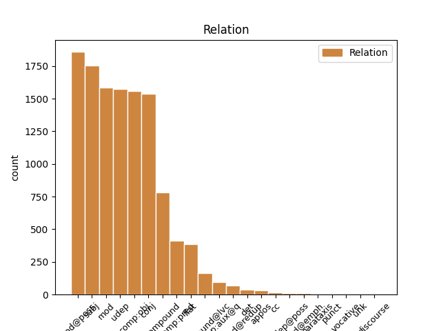
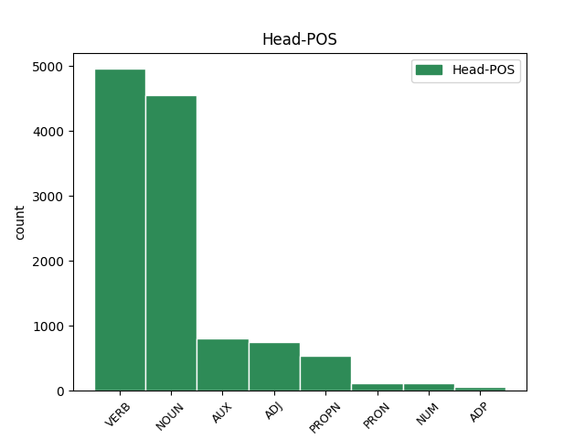
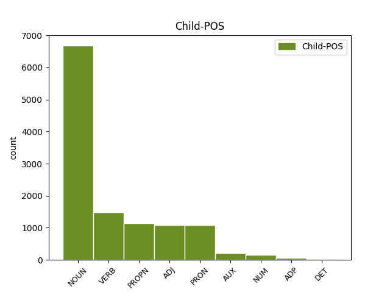

Distribution of features within this leaf



Agreement Rules sorted by frequency.
- When the dependent token is the modifer(mod@poss) of the head token, and the dependent token is NOUN.
1 Üç _ _ _ _ 0 _ _ _
2 ocak _ _ _ _ 0 _ _ _
3 lı _ _ _ _ 0 _ _ _
4 demirci _ _ _ _ 0 _ _ _
5 dükkanı _ _ _ _ 0 _ _ _
6 deyip _ _ _ _ 0 _ _ _
7 geçme _ _ _ _ 0 _ _ _
8 , _ _ _ _ 0 _ _ _
9 fayton fayton NOUN Noun Case=Nom|Number=Sing|Person=3 10 mod@poss _ _
10 imalatından imalat NOUN Noun Case=Abl|Number=Sing|Number[psor]=Sing|Person=3|Person[psor]=3 0 _ _ _
11 zengin _ _ _ _ 0 _ _ _
12 bile _ _ _ _ 0 _ _ _
13 olmuşlar _ _ _ _ 0 _ _ _
14 . _ _ _ _ 0 _ _ _
1 Sen _ _ _ _ 0 _ _ _
2 geç _ _ _ _ 0 _ _ _
3 yerine yer NOUN Noun Case=Dat|Number=Sing|Number[psor]=Sing|Person=3|Person[psor]=3 4 udep _ _
4 otur otur VERB Verb Aspect=Perf|Mood=Imp|Number=Sing|Person=2|Polarity=Pos|Tense=Pres 0 _ _ _
5 ! _ _ _ _ 0 _ _ _
1 Oysa _ _ _ _ 0 _ _ _
2 , _ _ _ _ 0 _ _ _
3 beyaz _ _ _ _ 0 _ _ _
4 peynirin _ _ _ _ 0 _ _ _
5 böyle _ _ _ _ 0 _ _ _
6 bir _ _ _ _ 0 _ _ _
7 efsanesi efsane NOUN Noun Case=Nom|Number=Sing|Number[psor]=Sing|Person=3|Person[psor]=3 8 subj _ _
8 olsa ol VERB Verb Aspect=Perf|Mood=Des|Number=Sing|Person=3|Polarity=Pos|Tense=Pres 0 _ _ _
9 . _ _ _ _ 0 _ _ _
1 Derken _ _ _ _ 0 _ _ _
2 , _ _ _ _ 0 _ _ _
3 ev _ _ _ _ 0 _ _ _
4 sahibi _ _ _ _ 0 _ _ _
5 beyan beyan NOUN Noun Case=Nom|Number=Sing|Person=3 6 comp:obj _ _
6 değiştiriyor değiş VERB Verb Aspect=Prog|Mood=Ind|Number=Sing|Person=3|Polarity=Pos|Polite=Infm|Tense=Pres|Voice=Cau 0 _ _ _
7 . _ _ _ _ 0 _ _ _
1 Erdoğan'ın _ _ _ _ 0 _ _ _
2 milletvekili _ _ _ _ 0 _ _ _
3 ve _ _ _ _ 0 _ _ _
4 başbakan _ _ _ _ 0 _ _ _
5 olmasını _ _ _ _ 0 _ _ _
6 sağlayacak _ _ _ _ 0 _ _ _
7 düzenlemede _ _ _ _ 0 _ _ _
8 , _ _ _ _ 0 _ _ _
9 Sezer'in _ _ _ _ 0 _ _ _
10 karşı _ _ _ _ 0 _ _ _
11 çıktığı _ _ _ _ 0 _ _ _
12 , _ _ _ _ 0 _ _ _
13 doğrudan _ _ _ _ 0 _ _ _
14 başbakanlık _ _ _ _ 0 _ _ _
15 getirecek _ _ _ _ 0 _ _ _
16 yüzdokuz _ _ _ _ 0 _ _ _
17 . _ _ _ _ 0 _ _ _
18 madde _ _ _ _ 0 _ _ _
19 yerine _ _ _ _ 0 _ _ _
20 ara _ _ _ _ 0 _ _ _
21 seçimi _ _ _ _ 0 _ _ _
22 düzenleyen _ _ _ _ 0 _ _ _
23 yetmişsekiz _ _ _ _ 0 _ _ _
24 . _ _ _ _ 0 _ _ _
25 madde _ _ _ _ 0 _ _ _
26 üzerinde üzer NOUN Noun Case=Loc|Number=Sing|Number[psor]=Sing|Person=3|Person[psor]=3 27 mod _ _
27 değişiklik değişiklik NOUN Noun Case=Nom|Number=Sing|Person=3 0 _ _ _
28 yapacaklarını _ _ _ _ 0 _ _ _
29 belirten _ _ _ _ 0 _ _ _
30 Şahin _ _ _ _ 0 _ _ _
31 , _ _ _ _ 0 _ _ _
32 şu _ _ _ _ 0 _ _ _
33 mesajı _ _ _ _ 0 _ _ _
34 verdi _ _ _ _ 0 _ _ _
35 : _ _ _ _ 0 _ _ _
36 . _ _ _ _ 0 _ _ _
1 Erdoğan'ın _ _ _ _ 0 _ _ _
2 milletvekili milletvekili NOUN Noun Case=Nom|Number=Sing|Person=3 0 _ _ _
3 ve _ _ _ _ 0 _ _ _
4 başbakan başbakan NOUN Noun Case=Nom|Number=Sing|Person=3 2 conj _ _
5 olmasını _ _ _ _ 0 _ _ _
6 sağlayacak _ _ _ _ 0 _ _ _
7 düzenlemede _ _ _ _ 0 _ _ _
8 , _ _ _ _ 0 _ _ _
9 Sezer'in _ _ _ _ 0 _ _ _
10 karşı _ _ _ _ 0 _ _ _
11 çıktığı _ _ _ _ 0 _ _ _
12 , _ _ _ _ 0 _ _ _
13 doğrudan _ _ _ _ 0 _ _ _
14 başbakanlık _ _ _ _ 0 _ _ _
15 getirecek _ _ _ _ 0 _ _ _
16 yüzdokuz _ _ _ _ 0 _ _ _
17 . _ _ _ _ 0 _ _ _
18 madde _ _ _ _ 0 _ _ _
19 yerine _ _ _ _ 0 _ _ _
20 ara _ _ _ _ 0 _ _ _
21 seçimi _ _ _ _ 0 _ _ _
22 düzenleyen _ _ _ _ 0 _ _ _
23 yetmişsekiz _ _ _ _ 0 _ _ _
24 . _ _ _ _ 0 _ _ _
25 madde _ _ _ _ 0 _ _ _
26 üzerinde _ _ _ _ 0 _ _ _
27 değişiklik _ _ _ _ 0 _ _ _
28 yapacaklarını _ _ _ _ 0 _ _ _
29 belirten _ _ _ _ 0 _ _ _
30 Şahin _ _ _ _ 0 _ _ _
31 , _ _ _ _ 0 _ _ _
32 şu _ _ _ _ 0 _ _ _
33 mesajı _ _ _ _ 0 _ _ _
34 verdi _ _ _ _ 0 _ _ _
35 : _ _ _ _ 0 _ _ _
36 . _ _ _ _ 0 _ _ _
1 Yerleştir _ _ _ _ 0 _ _ _
2 yerleştirme _ _ _ _ 0 _ _ _
3 , _ _ _ _ 0 _ _ _
4 devşir devşir VERB Verb Aspect=Perf|Mood=Imp|Number=Sing|Person=2|Polarity=Pos|Tense=Pres 0 _ _ _
5 devşirme devşir VERB Verb Aspect=Perf|Mood=Imp|Number=Sing|Person=2|Polarity=Neg|Tense=Pres 4 conj _ _
6 sınavları _ _ _ _ 0 _ _ _
7 falan _ _ _ _ 0 _ _ _
8 filan _ _ _ _ 0 _ _ _
9 yok _ _ _ _ 0 _ _ _
10 ... _ _ _ _ 0 _ _ _
1 Ancak _ _ _ _ 0 _ _ _
2 , _ _ _ _ 0 _ _ _
3 dün _ _ _ _ 0 _ _ _
4 bu _ _ _ _ 0 _ _ _
5 programı _ _ _ _ 0 _ _ _
6 Gül'ün _ _ _ _ 0 _ _ _
7 eşi _ _ _ _ 0 _ _ _
8 Hayrünnisa _ _ _ _ 0 _ _ _
9 Gül'ün _ _ _ _ 0 _ _ _
10 türbanı _ _ _ _ 0 _ _ _
11 olması _ _ _ _ 0 _ _ _
12 nedeniyle _ _ _ _ 0 _ _ _
13 gerçekleştirmeyen _ _ _ _ 0 _ _ _
14 ve _ _ _ _ 0 _ _ _
15 geleneği _ _ _ _ 0 _ _ _
16 bozan _ _ _ _ 0 _ _ _
17 Genelkurmay _ _ _ _ 0 _ _ _
18 Başkanı _ _ _ _ 0 _ _ _
19 Org _ _ _ _ 0 _ _ _
20 . _ _ _ _ 0 _ _ _
21 Hilmi _ _ _ _ 0 _ _ _
22 Özkök'ün _ _ _ _ 0 _ _ _
23 eşi eş ADJ NAdj Case=Nom|Number=Sing|Number[psor]=Sing|Person=3|Person[psor]=3 24 mod _ _
24 Özenç Özenç PROPN Prop Case=Nom|Number=Sing|Person=3 0 _ _ _
25 Özkök _ _ _ _ 0 _ _ _
26 , _ _ _ _ 0 _ _ _
27 YAŞ _ _ _ _ 0 _ _ _
28 üyelerinin _ _ _ _ 0 _ _ _
29 eşlerine _ _ _ _ 0 _ _ _
30 öğle _ _ _ _ 0 _ _ _
31 yemeği _ _ _ _ 0 _ _ _
32 vermedi _ _ _ _ 0 _ _ _
33 . _ _ _ _ 0 _ _ _
1 Erdoğan'ın _ _ _ _ 0 _ _ _
2 milletvekili _ _ _ _ 0 _ _ _
3 ve _ _ _ _ 0 _ _ _
4 başbakan _ _ _ _ 0 _ _ _
5 olmasını _ _ _ _ 0 _ _ _
6 sağlayacak _ _ _ _ 0 _ _ _
7 düzenlemede _ _ _ _ 0 _ _ _
8 , _ _ _ _ 0 _ _ _
9 Sezer'in _ _ _ _ 0 _ _ _
10 karşı _ _ _ _ 0 _ _ _
11 çıktığı _ _ _ _ 0 _ _ _
12 , _ _ _ _ 0 _ _ _
13 doğrudan _ _ _ _ 0 _ _ _
14 başbakanlık _ _ _ _ 0 _ _ _
15 getirecek _ _ _ _ 0 _ _ _
16 yüzdokuz _ _ _ _ 0 _ _ _
17 . _ _ _ _ 0 _ _ _
18 madde _ _ _ _ 0 _ _ _
19 yerine _ _ _ _ 0 _ _ _
20 ara _ _ _ _ 0 _ _ _
21 seçimi _ _ _ _ 0 _ _ _
22 düzenleyen _ _ _ _ 0 _ _ _
23 yetmişsekiz _ _ _ _ 0 _ _ _
24 . _ _ _ _ 0 _ _ _
25 madde _ _ _ _ 0 _ _ _
26 üzerinde _ _ _ _ 0 _ _ _
27 değişiklik _ _ _ _ 0 _ _ _
28 yapacaklarını _ _ _ _ 0 _ _ _
29 belirten _ _ _ _ 0 _ _ _
30 Şahin Şahin PROPN Prop Case=Nom|Number=Sing|Person=3 33 subj _ SpaceAfter=No
31 , _ _ _ _ 0 _ _ _
32 şu _ _ _ _ 0 _ _ _
33 mesajı mesaj NOUN Noun Case=Acc|Number=Sing|Person=3 0 _ _ _
34 verdi _ _ _ _ 0 _ _ _
35 : _ _ _ _ 0 _ _ _
36 . _ _ _ _ 0 _ _ _
1 Geçici _ _ _ _ 0 _ _ _
2 bütçe bütçe NOUN Noun Case=Nom|Number=Sing|Person=3 0 _ _ _
3 tasarısı tasarı NOUN Noun Case=Nom|Number=Sing|Number[psor]=Sing|Person=3|Person[psor]=3 2 compound _ SpaceAfter=No
4 , _ _ _ _ 0 _ _ _
5 Meclis'e _ _ _ _ 0 _ _ _
6 sunuldu _ _ _ _ 0 _ _ _
7 . _ _ _ _ 0 _ _ _
1 Sen sen PRON Pers Case=Nom|Number=Sing|Person=2|PronType=Prs 2 subj _ _
2 geç geç VERB Verb Aspect=Perf|Mood=Imp|Number=Sing|Person=2|Polarity=Pos|Tense=Pres 0 _ _ _
3 yerine _ _ _ _ 0 _ _ _
4 otur _ _ _ _ 0 _ _ _
5 ! _ _ _ _ 0 _ _ _
1 Erdoğan'ın _ _ _ _ 0 _ _ _
2 milletvekili _ _ _ _ 0 _ _ _
3 ve _ _ _ _ 0 _ _ _
4 başbakan _ _ _ _ 0 _ _ _
5 olmasını _ _ _ _ 0 _ _ _
6 sağlayacak _ _ _ _ 0 _ _ _
7 düzenlemede _ _ _ _ 0 _ _ _
8 , _ _ _ _ 0 _ _ _
9 Sezer'in _ _ _ _ 0 _ _ _
10 karşı _ _ _ _ 0 _ _ _
11 çıktığı _ _ _ _ 0 _ _ _
12 , _ _ _ _ 0 _ _ _
13 doğrudan _ _ _ _ 0 _ _ _
14 başbakanlık _ _ _ _ 0 _ _ _
15 getirecek _ _ _ _ 0 _ _ _
16 yüzdokuz _ _ _ _ 0 _ _ _
17 . _ _ _ _ 0 _ _ _
18 madde _ _ _ _ 0 _ _ _
19 yerine _ _ _ _ 0 _ _ _
20 ara _ _ _ _ 0 _ _ _
21 seçimi _ _ _ _ 0 _ _ _
22 düzenleyen _ _ _ _ 0 _ _ _
23 yetmişsekiz _ _ _ _ 0 _ _ _
24 . _ _ _ _ 0 _ _ _
25 madde _ _ _ _ 0 _ _ _
26 üzerinde _ _ _ _ 0 _ _ _
27 değişiklik _ _ _ _ 0 _ _ _
28 yapacaklarını _ _ _ _ 0 _ _ _
29 belirten _ _ _ _ 0 _ _ _
30 Şahin _ _ _ _ 0 _ _ _
31 , _ _ _ _ 0 _ _ _
32 şu _ _ _ _ 0 _ _ _
33 mesajı mesaj NOUN Noun Case=Acc|Number=Sing|Person=3 0 _ _ _
34 verdi ver VERB Verb Aspect=Perf|Mood=Ind|Number=Sing|Person=3|Polarity=Pos|Tense=Past 33 compound _ SpaceAfter=No
35 : _ _ _ _ 0 _ _ _
36 . _ _ _ _ 0 _ _ _
1 Ancak _ _ _ _ 0 _ _ _
2 , _ _ _ _ 0 _ _ _
3 dün _ _ _ _ 0 _ _ _
4 bu _ _ _ _ 0 _ _ _
5 programı _ _ _ _ 0 _ _ _
6 Gül'ün _ _ _ _ 0 _ _ _
7 eşi _ _ _ _ 0 _ _ _
8 Hayrünnisa _ _ _ _ 0 _ _ _
9 Gül'ün _ _ _ _ 0 _ _ _
10 türbanı _ _ _ _ 0 _ _ _
11 olması _ _ _ _ 0 _ _ _
12 nedeniyle _ _ _ _ 0 _ _ _
13 gerçekleştirmeyen _ _ _ _ 0 _ _ _
14 ve _ _ _ _ 0 _ _ _
15 geleneği _ _ _ _ 0 _ _ _
16 bozan _ _ _ _ 0 _ _ _
17 Genelkurmay _ _ _ _ 0 _ _ _
18 Başkanı _ _ _ _ 0 _ _ _
19 Org _ _ _ _ 0 _ _ _
20 . _ _ _ _ 0 _ _ _
21 Hilmi _ _ _ _ 0 _ _ _
22 Özkök'ün _ _ _ _ 0 _ _ _
23 eşi _ _ _ _ 0 _ _ _
24 Özenç Özenç PROPN Prop Case=Nom|Number=Sing|Person=3 0 _ _ _
25 Özkök Özkök PROPN Prop Case=Nom|Number=Sing|Person=3 24 flat _ SpaceAfter=No
26 , _ _ _ _ 0 _ _ _
27 YAŞ _ _ _ _ 0 _ _ _
28 üyelerinin _ _ _ _ 0 _ _ _
29 eşlerine _ _ _ _ 0 _ _ _
30 öğle _ _ _ _ 0 _ _ _
31 yemeği _ _ _ _ 0 _ _ _
32 vermedi _ _ _ _ 0 _ _ _
33 . _ _ _ _ 0 _ _ _
1 Bartın Bartın PROPN Prop Case=Nom|Number=Sing|Person=3 2 mod@poss _ _
2 gecesinden gece NOUN Noun Case=Abl|Number=Sing|Number[psor]=Sing|Person=3|Person[psor]=3 0 _ _ _
3 soğuk _ _ _ _ 0 _ _ _
4 bir _ _ _ _ 0 _ _ _
5 yel _ _ _ _ 0 _ _ _
6 esmeye _ _ _ _ 0 _ _ _
7 başlamıştı _ _ _ _ 0 _ _ _
8 . _ _ _ _ 0 _ _ _
1 Şirketin _ _ _ _ 0 _ _ _
2 patronu _ _ _ _ 0 _ _ _
3 olan _ _ _ _ 0 _ _ _
4 okul _ _ _ _ 0 _ _ _
5 arkadaşım _ _ _ _ 0 _ _ _
6 her _ _ _ _ 0 _ _ _
7 zaman _ _ _ _ 0 _ _ _
8 giydiği _ _ _ _ 0 _ _ _
9 birbirinin _ _ _ _ 0 _ _ _
10 aynı _ _ _ _ 0 _ _ _
11 siyah _ _ _ _ 0 _ _ _
12 takım _ _ _ _ 0 _ _ _
13 elbiseleri _ _ _ _ 0 _ _ _
14 , _ _ _ _ 0 _ _ _
15 inanılmaz _ _ _ _ 0 _ _ _
16 derecede _ _ _ _ 0 _ _ _
17 parlak _ _ _ _ 0 _ _ _
18 kravatlarıyla _ _ _ _ 0 _ _ _
19 öğlen _ _ _ _ 0 _ _ _
20 yemeğine _ _ _ _ 0 _ _ _
21 giderken _ _ _ _ 0 _ _ _
22 kapıdan _ _ _ _ 0 _ _ _
23 kafasını _ _ _ _ 0 _ _ _
24 uzatıp _ _ _ _ 0 _ _ _
25 Kaç _ _ _ _ 0 _ _ _
26 ? _ _ _ _ 0 _ _ _
27 diye _ _ _ _ 0 _ _ _
28 soruyordu _ _ _ _ 0 _ _ _
29 , _ _ _ _ 0 _ _ _
30 ona o PRON Pers Case=Dat|Number=Sing|Person=3|PronType=Prs 38 udep _ _
31 o _ _ _ _ 0 _ _ _
32 ana _ _ _ _ 0 _ _ _
33 kadar _ _ _ _ 0 _ _ _
34 okuyup _ _ _ _ 0 _ _ _
35 kaydettiğim _ _ _ _ 0 _ _ _
36 cinayetlerin _ _ _ _ 0 _ _ _
37 sayısını _ _ _ _ 0 _ _ _
38 söylüyordum söyle VERB Verb Aspect=Prog|Mood=Ind|Number=Sing|Person=1|Polarity=Pos|Polite=Infm|Tense=Past 0 _ _ _
39 . _ _ _ _ 0 _ _ _
1 - _ _ _ _ 0 _ _ _
2 Bu _ _ _ _ 0 _ _ _
3 senin _ _ _ _ 0 _ _ _
4 şalın şal NOUN Noun Case=Gen|Number=Sing|Person=3 5 comp:pred _ _
5 mış i AUX Zero Aspect=Perf|Evident=Nfh|Mood=Ind|Number=Sing|Person=3|Tense=Past 0 _ _ _
6 . _ _ _ _ 0 _ _ _
1 Muammer _ _ _ _ 0 _ _ _
2 , _ _ _ _ 0 _ _ _
3 yarım _ _ _ _ 0 _ _ _
4 şişe _ _ _ _ 0 _ _ _
5 viski _ _ _ _ 0 _ _ _
6 olacaktı _ _ _ _ 0 _ _ _
7 dolapta _ _ _ _ 0 _ _ _
8 , _ _ _ _ 0 _ _ _
9 getir getir VERB Verb Aspect=Perf|Mood=Imp|Number=Sing|Person=2|Polarity=Pos|Tense=Pres 0 _ _ _
10 onu o PRON Demons Case=Acc|Number=Sing|Person=3|PronType=Dem 9 comp:obj _ _
11 oğlum _ _ _ _ 0 _ _ _
12 . _ _ _ _ 0 _ _ _
1 Bağımlı _ _ _ _ 0 _ _ _
2 kişinin _ _ _ _ 0 _ _ _
3 beyninde _ _ _ _ 0 _ _ _
4 duygular _ _ _ _ 0 _ _ _
5 eşit _ _ _ _ 0 _ _ _
6 tir _ _ _ _ 0 _ _ _
7 acı _ _ _ _ 0 _ _ _
8 çekmek _ _ _ _ 0 _ _ _
9 formülü _ _ _ _ 0 _ _ _
10 var var ADJ NAdj Case=Nom|Number=Sing|Person=3 11 comp:pred _ _
11 dır i AUX Zero Aspect=Perf|Mood=Gen|Number=Sing|Person=3|Tense=Pres 0 _ _ _
12 . _ _ _ _ 0 _ _ _
1 Hiç _ _ _ _ 0 _ _ _
2 düşünmeden _ _ _ _ 0 _ _ _
3 adamın _ _ _ _ 0 _ _ _
4 teklifini _ _ _ _ 0 _ _ _
5 kabul kabul NOUN Noun Case=Nom|Number=Sing|Person=3 0 _ _ _
6 etmiş et VERB Verb Aspect=Perf|Evident=Nfh|Mood=Ind|Number=Sing|Person=3|Polarity=Pos|Tense=Past 5 compound@lvc _ SpaceAfter=No
7 . _ _ _ _ 0 _ _ _
1 Bunlar _ _ _ _ 0 _ _ _
2 olup _ _ _ _ 0 _ _ _
3 biterken _ _ _ _ 0 _ _ _
4 küçük _ _ _ _ 0 _ _ _
5 sarışın _ _ _ _ 0 _ _ _
6 çocuk _ _ _ _ 0 _ _ _
7 , _ _ _ _ 0 _ _ _
8 kucağında _ _ _ _ 0 _ _ _
9 , _ _ _ _ 0 _ _ _
10 bacaklarının _ _ _ _ 0 _ _ _
11 arasına _ _ _ _ 0 _ _ _
12 sıkıştırdığı _ _ _ _ 0 _ _ _
13 darbukaya _ _ _ _ 0 _ _ _
14 sol _ _ _ _ 0 _ _ _
15 eliyle _ _ _ _ 0 _ _ _
16 hiç _ _ _ _ 0 _ _ _
17 ses _ _ _ _ 0 _ _ _
18 çıkarmadan _ _ _ _ 0 _ _ _
19 , _ _ _ _ 0 _ _ _
20 okşarcasına okşa VERB Verb Aspect=Hab|Mood=Ind|Number=Sing|Person=3|Polarity=Pos|Tense=Pres|VerbForm=Conv 21 mod _ _
21 vuruyor vur VERB Verb Aspect=Prog|Mood=Ind|Number=Sing|Person=3|Polarity=Pos|Polite=Infm|Tense=Pres 0 _ _ _
22 , _ _ _ _ 0 _ _ _
23 sağ _ _ _ _ 0 _ _ _
24 eliyle _ _ _ _ 0 _ _ _
25 de _ _ _ _ 0 _ _ _
26 tabağında _ _ _ _ 0 _ _ _
27 kileri _ _ _ _ 0 _ _ _
28 ağzına _ _ _ _ 0 _ _ _
29 tıkıştırıyordu _ _ _ _ 0 _ _ _
30 . _ _ _ _ 0 _ _ _
1 Pamuk pamuk NOUN Noun Case=Nom|Number=Sing|Person=3 0 _ _ _
2 Prenses prenses NOUN Noun Case=Nom|Number=Sing|Person=3 1 flat _ _
3 masalının _ _ _ _ 0 _ _ _
4 üvey _ _ _ _ 0 _ _ _
5 babaya _ _ _ _ 0 _ _ _
6 uyarlanması _ _ _ _ 0 _ _ _
7 olmuş _ _ _ _ 0 _ _ _
8 bence _ _ _ _ 0 _ _ _
9 . _ _ _ _ 0 _ _ _
1 Rolü _ _ _ _ 0 _ _ _
2 başkasına _ _ _ _ 0 _ _ _
3 verdik ver VERB Verb Aspect=Perf|Mood=Ind|Number=Plur|Person=1|Polarity=Pos|Tense=Past 4 comp:obj _ _
4 dediler de VERB Verb Aspect=Perf|Mood=Ind|Number=Plur|Person=3|Polarity=Pos|Tense=Past 0 _ _ _
5 . _ _ _ _ 0 _ _ _
1 - _ _ _ _ 0 _ _ _
2 Bu _ _ _ _ 0 _ _ _
3 senin sen PRON Pers Case=Gen|Number=Sing|Person=2|PronType=Prs 4 mod _ _
4 şalın şal NOUN Noun Case=Gen|Number=Sing|Person=3 0 _ _ _
5 mış _ _ _ _ 0 _ _ _
6 . _ _ _ _ 0 _ _ _
1 Türkiye'nin _ _ _ _ 0 _ _ _
2 yapacağı _ _ _ _ 0 _ _ _
3 hibe _ _ _ _ 0 _ _ _
4 ve _ _ _ _ 0 _ _ _
5 yardımlarla _ _ _ _ 0 _ _ _
6 ilgili _ _ _ _ 0 _ _ _
7 olarak _ _ _ _ 0 _ _ _
8 da _ _ _ _ 0 _ _ _
9 Cumhurbaşkanı cumhurbaşkanı NOUN Noun Case=Nom|Number=Sing|Number[psor]=Sing|Person=3|Person[psor]=3 0 _ _ _
10 ve _ _ _ _ 0 _ _ _
11 Başbakan'ın Başbakan PROPN Prop Case=Gen|Number=Sing|Person=3 9 conj _ _
12 yetkileri _ _ _ _ 0 _ _ _
13 saklı _ _ _ _ 0 _ _ _
14 kalmak _ _ _ _ 0 _ _ _
15 kaydıyla _ _ _ _ 0 _ _ _
16 hükümetin _ _ _ _ 0 _ _ _
17 belirleyeceği _ _ _ _ 0 _ _ _
18 kişi _ _ _ _ 0 _ _ _
19 ve _ _ _ _ 0 _ _ _
20 kuruluşlar _ _ _ _ 0 _ _ _
21 yetkili _ _ _ _ 0 _ _ _
22 olacak _ _ _ _ 0 _ _ _
23 . _ _ _ _ 0 _ _ _
1 Bir _ _ _ _ 0 _ _ _
2 dilim _ _ _ _ 0 _ _ _
3 ekmeğe _ _ _ _ 0 _ _ _
4 muhtaç _ _ _ _ 0 _ _ _
5 ız _ _ _ _ 0 _ _ _
6 , _ _ _ _ 0 _ _ _
7 diye _ _ _ _ 0 _ _ _
8 yanıtlamış yanıtla VERB Verb Aspect=Perf|Evident=Nfh|Mood=Ind|Number=Sing|Person=3|Polarity=Pos|Tense=Past 0 _ _ _
9 küçük _ _ _ _ 0 _ _ _
10 kız kız ADJ NAdj Case=Nom|Number=Sing|Person=3 8 subj _ SpaceAfter=No
11 . _ _ _ _ 0 _ _ _
1 Ancak _ _ _ _ 0 _ _ _
2 , _ _ _ _ 0 _ _ _
3 dün _ _ _ _ 0 _ _ _
4 bu _ _ _ _ 0 _ _ _
5 programı _ _ _ _ 0 _ _ _
6 Gül'ün _ _ _ _ 0 _ _ _
7 eşi _ _ _ _ 0 _ _ _
8 Hayrünnisa _ _ _ _ 0 _ _ _
9 Gül'ün _ _ _ _ 0 _ _ _
10 türbanı _ _ _ _ 0 _ _ _
11 olması _ _ _ _ 0 _ _ _
12 nedeniyle _ _ _ _ 0 _ _ _
13 gerçekleştirmeyen _ _ _ _ 0 _ _ _
14 ve _ _ _ _ 0 _ _ _
15 geleneği _ _ _ _ 0 _ _ _
16 bozan _ _ _ _ 0 _ _ _
17 Genelkurmay _ _ _ _ 0 _ _ _
18 Başkanı _ _ _ _ 0 _ _ _
19 Org _ _ _ _ 0 _ _ _
20 . _ _ _ _ 0 _ _ _
21 Hilmi _ _ _ _ 0 _ _ _
22 Özkök'ün _ _ _ _ 0 _ _ _
23 eşi _ _ _ _ 0 _ _ _
24 Özenç _ _ _ _ 0 _ _ _
25 Özkök _ _ _ _ 0 _ _ _
26 , _ _ _ _ 0 _ _ _
27 YAŞ yaş ADJ NAdj Case=Nom|Number=Sing|Person=3 28 mod@poss _ _
28 üyelerinin üye NOUN Noun Case=Gen|Number=Sing|Number[psor]=Plur|Person=3|Person[psor]=3 0 _ _ _
29 eşlerine _ _ _ _ 0 _ _ _
30 öğle _ _ _ _ 0 _ _ _
31 yemeği _ _ _ _ 0 _ _ _
32 vermedi _ _ _ _ 0 _ _ _
33 . _ _ _ _ 0 _ _ _
1 Bila _ _ _ _ 0 _ _ _
2 , _ _ _ _ 0 _ _ _
3 " _ _ _ _ 0 _ _ _
4 Sizinle _ _ _ _ 0 _ _ _
5 ilgili _ _ _ _ 0 _ _ _
6 izlenimlerimi _ _ _ _ 0 _ _ _
7 yazacağım _ _ _ _ 0 _ _ _
8 , _ _ _ _ 0 _ _ _
9 isterseniz _ _ _ _ 0 _ _ _
10 , _ _ _ _ 0 _ _ _
11 bu _ _ _ _ 0 _ _ _
12 söylediklerinizi _ _ _ _ 0 _ _ _
13 de _ _ _ _ 0 _ _ _
14 yazayım yaz VERB Verb Aspect=Perf|Mood=Opt|Number=Sing|Person=1|Polarity=Pos|Tense=Pres 0 _ _ _
15 , _ _ _ _ 0 _ _ _
16 ancak _ _ _ _ 0 _ _ _
17 teypte _ _ _ _ 0 _ _ _
18 ki _ _ _ _ 0 _ _ _
19 ifadenizi _ _ _ _ 0 _ _ _
20 de _ _ _ _ 0 _ _ _
21 yazmak _ _ _ _ 0 _ _ _
22 zorunda _ _ _ _ 0 _ _ _
23 yım i AUX Zero Aspect=Perf|Mood=Ind|Number=Sing|Person=1|Tense=Pres 14 conj _ _
24 " _ _ _ _ 0 _ _ _
25 karşılığını _ _ _ _ 0 _ _ _
26 verdi _ _ _ _ 0 _ _ _
27 . _ _ _ _ 0 _ _ _
1 Uçucu _ _ _ _ 0 _ _ _
2 bir _ _ _ _ 0 _ _ _
3 bulutçuk _ _ _ _ 0 _ _ _
4 ağ _ _ _ _ 0 _ _ _
5 dı _ _ _ _ 0 _ _ _
6 , _ _ _ _ 0 _ _ _
7 sararmış _ _ _ _ 0 _ _ _
8 lığıma _ _ _ _ 0 _ _ _
9 , _ _ _ _ 0 _ _ _
10 tuttum tut VERB Verb Aspect=Perf|Mood=Ind|Number=Sing|Person=1|Polarity=Pos|Tense=Past 0 _ _ _
11 biteğini bitek ADJ NAdj Case=Acc|Number=Sing|Number[psor]=Sing|Person=3|Person[psor]=3 10 comp:obj _ SpaceAfter=No
12 . _ _ _ _ 0 _ _ _
1 Projeler _ _ _ _ 0 _ _ _
2 , _ _ _ _ 0 _ _ _
3 imeceler imece NOUN Noun Case=Nom|Number=Plur|Person=3 0 _ _ _
4 , _ _ _ _ 0 _ _ _
5 göreceler görece ADJ NAdj Case=Nom|Number=Plur|Person=3 3 conj _ SpaceAfter=No
6 , _ _ _ _ 0 _ _ _
7 vesaire _ _ _ _ 0 _ _ _
8 , _ _ _ _ 0 _ _ _
9 her _ _ _ _ 0 _ _ _
10 daim _ _ _ _ 0 _ _ _
11 daire _ _ _ _ 0 _ _ _
12 .. _ _ _ _ 0 _ _ _
1 Ancak _ _ _ _ 0 _ _ _
2 , _ _ _ _ 0 _ _ _
3 dün _ _ _ _ 0 _ _ _
4 bu _ _ _ _ 0 _ _ _
5 programı _ _ _ _ 0 _ _ _
6 Gül'ün _ _ _ _ 0 _ _ _
7 eşi _ _ _ _ 0 _ _ _
8 Hayrünnisa _ _ _ _ 0 _ _ _
9 Gül'ün _ _ _ _ 0 _ _ _
10 türbanı _ _ _ _ 0 _ _ _
11 olması _ _ _ _ 0 _ _ _
12 nedeniyle _ _ _ _ 0 _ _ _
13 gerçekleştirmeyen _ _ _ _ 0 _ _ _
14 ve _ _ _ _ 0 _ _ _
15 geleneği _ _ _ _ 0 _ _ _
16 bozan _ _ _ _ 0 _ _ _
17 Genelkurmay genelkurmay NOUN Noun Case=Nom|Number=Sing|Person=3 0 _ _ _
18 Başkanı _ _ _ _ 0 _ _ _
19 Org _ _ _ _ 0 _ _ _
20 . _ _ _ _ 0 _ _ _
21 Hilmi _ _ _ _ 0 _ _ _
22 Özkök'ün Özkök PROPN Prop Case=Gen|Number=Sing|Person=3 17 compound _ _
23 eşi _ _ _ _ 0 _ _ _
24 Özenç _ _ _ _ 0 _ _ _
25 Özkök _ _ _ _ 0 _ _ _
26 , _ _ _ _ 0 _ _ _
27 YAŞ _ _ _ _ 0 _ _ _
28 üyelerinin _ _ _ _ 0 _ _ _
29 eşlerine _ _ _ _ 0 _ _ _
30 öğle _ _ _ _ 0 _ _ _
31 yemeği _ _ _ _ 0 _ _ _
32 vermedi _ _ _ _ 0 _ _ _
33 . _ _ _ _ 0 _ _ _
1 Bila _ _ _ _ 0 _ _ _
2 , _ _ _ _ 0 _ _ _
3 " _ _ _ _ 0 _ _ _
4 Sizinle siz PRON Pers Case=Ins|Number=Plur|Person=2|PronType=Prs 6 mod@poss _ _
5 ilgili _ _ _ _ 0 _ _ _
6 izlenimlerimi izlenim NOUN Noun Case=Acc|Number=Plur|Number[psor]=Sing|Person=3|Person[psor]=1 0 _ _ _
7 yazacağım _ _ _ _ 0 _ _ _
8 , _ _ _ _ 0 _ _ _
9 isterseniz _ _ _ _ 0 _ _ _
10 , _ _ _ _ 0 _ _ _
11 bu _ _ _ _ 0 _ _ _
12 söylediklerinizi _ _ _ _ 0 _ _ _
13 de _ _ _ _ 0 _ _ _
14 yazayım _ _ _ _ 0 _ _ _
15 , _ _ _ _ 0 _ _ _
16 ancak _ _ _ _ 0 _ _ _
17 teypte _ _ _ _ 0 _ _ _
18 ki _ _ _ _ 0 _ _ _
19 ifadenizi _ _ _ _ 0 _ _ _
20 de _ _ _ _ 0 _ _ _
21 yazmak _ _ _ _ 0 _ _ _
22 zorunda _ _ _ _ 0 _ _ _
23 yım _ _ _ _ 0 _ _ _
24 " _ _ _ _ 0 _ _ _
25 karşılığını _ _ _ _ 0 _ _ _
26 verdi _ _ _ _ 0 _ _ _
27 . _ _ _ _ 0 _ _ _
1 Erdoğan'ın _ _ _ _ 0 _ _ _
2 milletvekili _ _ _ _ 0 _ _ _
3 ve _ _ _ _ 0 _ _ _
4 başbakan _ _ _ _ 0 _ _ _
5 olmasını _ _ _ _ 0 _ _ _
6 sağlayacak _ _ _ _ 0 _ _ _
7 düzenlemede _ _ _ _ 0 _ _ _
8 , _ _ _ _ 0 _ _ _
9 Sezer'in Sezer PROPN Prop Case=Gen|Number=Sing|Person=3 10 mod _ _
10 karşı karşı ADJ NAdj Case=Nom|Number=Sing|Person=3 0 _ _ _
11 çıktığı _ _ _ _ 0 _ _ _
12 , _ _ _ _ 0 _ _ _
13 doğrudan _ _ _ _ 0 _ _ _
14 başbakanlık _ _ _ _ 0 _ _ _
15 getirecek _ _ _ _ 0 _ _ _
16 yüzdokuz _ _ _ _ 0 _ _ _
17 . _ _ _ _ 0 _ _ _
18 madde _ _ _ _ 0 _ _ _
19 yerine _ _ _ _ 0 _ _ _
20 ara _ _ _ _ 0 _ _ _
21 seçimi _ _ _ _ 0 _ _ _
22 düzenleyen _ _ _ _ 0 _ _ _
23 yetmişsekiz _ _ _ _ 0 _ _ _
24 . _ _ _ _ 0 _ _ _
25 madde _ _ _ _ 0 _ _ _
26 üzerinde _ _ _ _ 0 _ _ _
27 değişiklik _ _ _ _ 0 _ _ _
28 yapacaklarını _ _ _ _ 0 _ _ _
29 belirten _ _ _ _ 0 _ _ _
30 Şahin _ _ _ _ 0 _ _ _
31 , _ _ _ _ 0 _ _ _
32 şu _ _ _ _ 0 _ _ _
33 mesajı _ _ _ _ 0 _ _ _
34 verdi _ _ _ _ 0 _ _ _
35 : _ _ _ _ 0 _ _ _
36 . _ _ _ _ 0 _ _ _
1 Geçici _ _ _ _ 0 _ _ _
2 bütçe _ _ _ _ 0 _ _ _
3 tasarısı _ _ _ _ 0 _ _ _
4 , _ _ _ _ 0 _ _ _
5 Meclis'e Meclis PROPN Prop Case=Dat|Number=Sing|Person=3 6 udep _ _
6 sunuldu sun VERB Verb Aspect=Perf|Mood=Ind|Number=Sing|Person=3|Polarity=Pos|Tense=Past|Voice=Pass 0 _ _ _
7 . _ _ _ _ 0 _ _ _
1 Sonra _ _ _ _ 0 _ _ _
2 , _ _ _ _ 0 _ _ _
3 patron _ _ _ _ 0 _ _ _
4 olduğunu _ _ _ _ 0 _ _ _
5 anımsatmak _ _ _ _ 0 _ _ _
6 için _ _ _ _ 0 _ _ _
7 , _ _ _ _ 0 _ _ _
8 soymakta _ _ _ _ 0 _ _ _
9 olduğu _ _ _ _ 0 _ _ _
10 patatesleri _ _ _ _ 0 _ _ _
11 bırakıp _ _ _ _ 0 _ _ _
12 , _ _ _ _ 0 _ _ _
13 bir _ _ _ _ 0 _ _ _
14 çay _ _ _ _ 0 _ _ _
15 doldurdu _ _ _ _ 0 _ _ _
16 , _ _ _ _ 0 _ _ _
17 masalardan _ _ _ _ 0 _ _ _
18 birine bir NUM NNum Case=Dat|Number=Sing|Number[psor]=Sing|NumType=Card|Person=3|Person[psor]=3 19 mod _ _
19 geçti geç VERB Verb Aspect=Perf|Mood=Ind|Number=Sing|Person=3|Polarity=Pos|Tense=Past 0 _ _ _
20 , _ _ _ _ 0 _ _ _
21 sabahtan _ _ _ _ 0 _ _ _
22 beri _ _ _ _ 0 _ _ _
23 bakıla _ _ _ _ 0 _ _ _
24 bakıla _ _ _ _ 0 _ _ _
25 paçavra _ _ _ _ 0 _ _ _
26 gibi _ _ _ _ 0 _ _ _
27 olmuş _ _ _ _ 0 _ _ _
28 gazeteyi _ _ _ _ 0 _ _ _
29 eline _ _ _ _ 0 _ _ _
30 aldı _ _ _ _ 0 _ _ _
31 . _ _ _ _ 0 _ _ _
1 Bir _ _ _ _ 0 _ _ _
2 akşam akşam NOUN Noun Case=Nom|Number=Sing|Person=3 0 _ _ _
3 üstü üst ADJ NAdj Case=Nom|Number=Sing|Number[psor]=Sing|Person=3|Person[psor]=3 2 compound _ _
4 de _ _ _ _ 0 _ _ _
5 başında _ _ _ _ 0 _ _ _
6 ki _ _ _ _ 0 _ _ _
7 o _ _ _ _ 0 _ _ _
8 komik _ _ _ _ 0 _ _ _
9 perukla _ _ _ _ 0 _ _ _
10 fahişe _ _ _ _ 0 _ _ _
11 olmadan _ _ _ _ 0 _ _ _
12 önce _ _ _ _ 0 _ _ _
13 ( _ _ _ _ 0 _ _ _
14 sadece _ _ _ _ 0 _ _ _
15 basım _ _ _ _ 0 _ _ _
16 evinde _ _ _ _ 0 _ _ _
17 çalışan _ _ _ _ 0 _ _ _
18 , _ _ _ _ 0 _ _ _
19 mürekkep _ _ _ _ 0 _ _ _
20 kokan _ _ _ _ 0 _ _ _
21 sevgilinle _ _ _ _ 0 _ _ _
22 yattığın _ _ _ _ 0 _ _ _
23 günlerde _ _ _ _ 0 _ _ _
24 ) _ _ _ _ 0 _ _ _
25 çalıştığın _ _ _ _ 0 _ _ _
26 markete _ _ _ _ 0 _ _ _
27 girdin _ _ _ _ 0 _ _ _
28 . _ _ _ _ 0 _ _ _
1 Komşuların _ _ _ _ 0 _ _ _
2 kapılarını _ _ _ _ 0 _ _ _
3 teker teker NOUN Noun Case=Nom|Number=Sing|Person=3 0 _ _ _
4 teker teker NOUN Noun Case=Nom|Number=Sing|Person=3 3 compound@redup _ _
5 çalıp _ _ _ _ 0 _ _ _
6 iş _ _ _ _ 0 _ _ _
7 istemiş _ _ _ _ 0 _ _ _
8 . _ _ _ _ 0 _ _ _
1 Sevinmez sevin VERB Verb Aspect=Hab|Mood=Ind|Number=Sing|Person=3|Polarity=Neg|Tense=Pres 2 comp:aux@q _ _
2 mi mi AUX Ques Aspect=Perf|Mood=Ind|Number=Sing|Person=3|Tense=Pres 0 _ _ _
3 ? _ _ _ _ 0 _ _ _
1 Ben ben PRON Pers Case=Nom|Number=Sing|Person=1|PronType=Prs 2 comp:pred _ _
2 se i AUX Zero Aspect=Perf|Mood=Cnd|Number=Sing|Person=3|Tense=Pres 0 _ _ _
3 korkuyordum _ _ _ _ 0 _ _ _
4 . _ _ _ _ 0 _ _ _
1 Mahmut Mahmut PROPN Prop Case=Nom|Number=Sing|Person=3 3 comp:obj _ SpaceAfter=No
2 , _ _ _ _ 0 _ _ _
3 dedi de VERB Verb Aspect=Perf|Mood=Ind|Number=Sing|Person=3|Polarity=Pos|Tense=Past 0 _ _ _
4 . _ _ _ _ 0 _ _ _
1 Kanatmış _ _ _ _ 0 _ _ _
2 mıyım mı AUX Ques Aspect=Perf|Mood=Ind|Number=Sing|Person=1|Tense=Pres 3 mod _ _
3 ne ne PRON Ques Case=Nom|Number=Sing|Person=3 0 _ _ _
4 ? _ _ _ _ 0 _ _ _
5 Dolma _ _ _ _ 0 _ _ _
6 gibi _ _ _ _ 0 _ _ _
7 dudakları _ _ _ _ 0 _ _ _
8 . _ _ _ _ 0 _ _ _
1 Ana'yı _ _ _ _ 0 _ _ _
2 arayan _ _ _ _ 0 _ _ _
3 yabancı _ _ _ _ 0 _ _ _
4 , _ _ _ _ 0 _ _ _
5 sizden _ _ _ _ 0 _ _ _
6 biraz _ _ _ _ 0 _ _ _
7 daha _ _ _ _ 0 _ _ _
8 uzun _ _ _ _ 0 _ _ _
9 boylu _ _ _ _ 0 _ _ _
10 ydu i AUX Zero Aspect=Perf|Mood=Ind|Number=Sing|Person=3|Tense=Past 12 comp:obj _ _
11 , _ _ _ _ 0 _ _ _
12 dedi de VERB Verb Aspect=Perf|Mood=Ind|Number=Sing|Person=3|Polarity=Pos|Tense=Past 0 _ _ _
13 Jul _ _ _ _ 0 _ _ _
14 . _ _ _ _ 0 _ _ _
1 Yapı _ _ _ _ 0 _ _ _
2 ve _ _ _ _ 0 _ _ _
3 Kredi _ _ _ _ 0 _ _ _
4 Bankası _ _ _ _ 0 _ _ _
5 , _ _ _ _ 0 _ _ _
6 sermaye _ _ _ _ 0 _ _ _
7 artırımına _ _ _ _ 0 _ _ _
8 katıldığı _ _ _ _ 0 _ _ _
9 parayla _ _ _ _ 0 _ _ _
10 şirkete _ _ _ _ 0 _ _ _
11 yüzde yüz NUM NNum Case=Loc|Number=Sing|NumType=Card|Person=3 0 _ _ _
12 yirmibeş yirmibeş NUM NNum Case=Nom|Number=Sing|NumType=Card|Person=3 11 flat _ _
13 'lik _ _ _ _ 0 _ _ _
14 payla _ _ _ _ 0 _ _ _
15 ortak _ _ _ _ 0 _ _ _
16 oldu _ _ _ _ 0 _ _ _
17 . _ _ _ _ 0 _ _ _
1 Bu bu PRON Demons Case=Nom|Number=Sing|Person=3|PronType=Dem 17 det _ _
2 çekinme _ _ _ _ 0 _ _ _
3 siz _ _ _ _ 0 _ _ _
4 , _ _ _ _ 0 _ _ _
5 sıcak _ _ _ _ 0 _ _ _
6 davranış _ _ _ _ 0 _ _ _
7 lı _ _ _ _ 0 _ _ _
8 , _ _ _ _ 0 _ _ _
9 içinde _ _ _ _ 0 _ _ _
10 biriktirdiği _ _ _ _ 0 _ _ _
11 derinliği _ _ _ _ 0 _ _ _
12 dışa _ _ _ _ 0 _ _ _
13 da _ _ _ _ 0 _ _ _
14 yansıtmaktan _ _ _ _ 0 _ _ _
15 kaçınmayan _ _ _ _ 0 _ _ _
16 sarışın _ _ _ _ 0 _ _ _
17 kız kız ADJ NAdj Case=Nom|Number=Sing|Person=3 0 _ _ _
18 , _ _ _ _ 0 _ _ _
19 gelebileceğini _ _ _ _ 0 _ _ _
20 söylemişti _ _ _ _ 0 _ _ _
21 . _ _ _ _ 0 _ _ _
1 Rusça Rusça PROPN Prop Case=Nom|Number=Sing|Person=3 0 _ _ _
2 lahana lahana NOUN Noun Case=Nom|Number=Sing|Person=3 1 appos _ _
3 demek _ _ _ _ 0 _ _ _
4 olan _ _ _ _ 0 _ _ _
5 Kapuska _ _ _ _ 0 _ _ _
6 yemek _ _ _ _ 0 _ _ _
7 oldu _ _ _ _ 0 _ _ _
8 . _ _ _ _ 0 _ _ _
1 Annem _ _ _ _ 0 _ _ _
2 hep _ _ _ _ 0 _ _ _
3 korkmuş _ _ _ _ 0 _ _ _
4 , _ _ _ _ 0 _ _ _
5 çocuklarımdan _ _ _ _ 0 _ _ _
6 biri _ _ _ _ 0 _ _ _
7 büyük _ _ _ _ 0 _ _ _
8 amcalarına _ _ _ _ 0 _ _ _
9 benzer _ _ _ _ 0 _ _ _
10 diye _ _ _ _ 0 _ _ _
11 ; _ _ _ _ 0 _ _ _
12 ama _ _ _ _ 0 _ _ _
13 şimdi _ _ _ _ 0 _ _ _
14 bakıyormuş bak VERB Verb Aspect=Prog|Evident=Nfh|Mood=Ind|Number=Sing|Person=3|Polarity=Pos|Polite=Infm|Tense=Past 0 _ _ _
15 da _ _ _ _ 0 _ _ _
16 , _ _ _ _ 0 _ _ _
17 benim ben PRON Pers Case=Gen|Number=Sing|Person=1|PronType=Prs 14 conj _ _
18 yolum _ _ _ _ 0 _ _ _
19 yol _ _ _ _ 0 _ _ _
20 değilmiş _ _ _ _ 0 _ _ _
21 . _ _ _ _ 0 _ _ _
1 Yedi _ _ _ _ 0 _ _ _
2 saat _ _ _ _ 0 _ _ _
3 lik _ _ _ _ 0 _ _ _
4 yolculuk _ _ _ _ 0 _ _ _
5 boyunca _ _ _ _ 0 _ _ _
6 - _ _ _ _ 0 _ _ _
7 ki _ _ _ _ 0 _ _ _
8 yetmiş yetmiş NUM NNum Case=Nom|Number=Sing|NumType=Card|Person=3 10 comp:obj _ _
9 kilometre _ _ _ _ 0 _ _ _
10 kat kat NOUN Noun Case=Nom|Number=Sing|Person=3 0 _ _ _
11 edecektik _ _ _ _ 0 _ _ _
12 - _ _ _ _ 0 _ _ _
13 bir _ _ _ _ 0 _ _ _
14 tek _ _ _ _ 0 _ _ _
15 eve _ _ _ _ 0 _ _ _
16 rastlamanın _ _ _ _ 0 _ _ _
17 mümkün _ _ _ _ 0 _ _ _
18 olmadığı _ _ _ _ 0 _ _ _
19 bir _ _ _ _ 0 _ _ _
20 coğrafya _ _ _ _ 0 _ _ _
21 . _ _ _ _ 0 _ _ _
1 - _ _ _ _ 0 _ _ _
2 Bir _ _ _ _ 0 _ _ _
3 yerden yer NOUN Noun Case=Abl|Number=Sing|Person=3 4 comp:aux@q _ _
4 mi mi AUX Ques Aspect=Perf|Mood=Ind|Number=Sing|Person=3|Tense=Pres 0 _ _ _
5 bakıp _ _ _ _ 0 _ _ _
6 yazıyorsun _ _ _ _ 0 _ _ _
7 . _ _ _ _ 0 _ _ _
1 - _ _ _ _ 0 _ _ _
2 Bir _ _ _ _ 0 _ _ _
3 yerden _ _ _ _ 0 _ _ _
4 mi mi AUX Ques Aspect=Perf|Mood=Ind|Number=Sing|Person=3|Tense=Pres 6 udep _ _
5 bakıp _ _ _ _ 0 _ _ _
6 yazıyorsun yaz VERB Verb Aspect=Prog|Mood=Ind|Number=Sing|Person=2|Polarity=Pos|Polite=Infm|Tense=Pres 0 _ _ _
7 . _ _ _ _ 0 _ _ _
1 Uçucu _ _ _ _ 0 _ _ _
2 bir _ _ _ _ 0 _ _ _
3 bulutçuk _ _ _ _ 0 _ _ _
4 ağ ağ NOUN Noun Case=Nom|Number=Sing|Person=3 0 _ _ _
5 dı _ _ _ _ 0 _ _ _
6 , _ _ _ _ 0 _ _ _
7 sararmış _ _ _ _ 0 _ _ _
8 lığıma lik ADP Ness Case=Dat|Number=Sing|Number[psor]=Sing|Person=3|Person[psor]=1 4 udep _ _
9 , _ _ _ _ 0 _ _ _
10 tuttum _ _ _ _ 0 _ _ _
11 biteğini _ _ _ _ 0 _ _ _
12 . _ _ _ _ 0 _ _ _
1 Dört dört NUM NNum Case=Nom|Number=Sing|NumType=Card|Person=3 2 mod@poss _ _
2 parmağını parmak NOUN Noun Case=Acc|Number=Sing|Number[psor]=Sing|Person=3|Person[psor]=3 0 _ _ _
3 gösterdi _ _ _ _ 0 _ _ _
4 ; _ _ _ _ 0 _ _ _
5 sonra _ _ _ _ 0 _ _ _
6 saatini _ _ _ _ 0 _ _ _
7 . _ _ _ _ 0 _ _ _
1 o _ _ _ _ 0 _ _ _
2 Köye _ _ _ _ 0 _ _ _
3 dönüş dönüş VERB Verb Aspect=Perf|Mood=Imp|Number=Sing|Person=2|Polarity=Pos|Tense=Pres 4 mod@poss _ _
4 projesi proje NOUN Noun Case=Nom|Number=Sing|Number[psor]=Sing|Person=3|Person[psor]=3 0 _ _ _
5 başlatılacak _ _ _ _ 0 _ _ _
6 . _ _ _ _ 0 _ _ _
1 Drugstore'da _ _ _ _ 0 _ _ _
2 alışveriş _ _ _ _ 0 _ _ _
3 yapanların _ _ _ _ 0 _ _ _
4 yüzde _ _ _ _ 0 _ _ _
5 91'i _ _ _ _ 0 _ _ _
6 ambalajın _ _ _ _ 0 _ _ _
7 önyüzünü _ _ _ _ 0 _ _ _
8 , _ _ _ _ 0 _ _ _
9 yüzde _ _ _ _ 0 _ _ _
10 42'si _ _ _ _ 0 _ _ _
11 arkasını _ _ _ _ 0 _ _ _
12 , _ _ _ _ 0 _ _ _
13 yüzde yüz NUM NNum Case=Loc|Number=Sing|NumType=Card|Person=3 18 subj _ _
14 8'i _ _ _ _ 0 _ _ _
15 de _ _ _ _ 0 _ _ _
16 yan _ _ _ _ 0 _ _ _
17 yüzlerini _ _ _ _ 0 _ _ _
18 okuyor oku VERB Verb Aspect=Prog|Mood=Ind|Number=Sing|Person=3|Polarity=Pos|Polite=Infm|Tense=Pres 0 _ _ _
19 . _ _ _ _ 0 _ _ _
1 İç _ _ _ _ 0 _ _ _
2 içe _ _ _ _ 0 _ _ _
3 , _ _ _ _ 0 _ _ _
4 üst üst ADJ NAdj Case=Nom|Number=Sing|Person=3 0 _ _ _
5 üste üst ADJ NAdj Case=Dat|Number=Sing|Person=3 4 compound@redup _ _
6 kol _ _ _ _ 0 _ _ _
7 ve _ _ _ _ 0 _ _ _
8 yaprak _ _ _ _ 0 _ _ _
9 verirler _ _ _ _ 0 _ _ _
10 . _ _ _ _ 0 _ _ _
1 İzzettin _ _ _ _ 0 _ _ _
2 Doğan _ _ _ _ 0 _ _ _
3 ve _ _ _ _ 0 _ _ _
4 Alevi _ _ _ _ 0 _ _ _
5 Bektaşi _ _ _ _ 0 _ _ _
6 Kültürü _ _ _ _ 0 _ _ _
7 Derneği _ _ _ _ 0 _ _ _
8 Başkanı başkan NOUN Noun Case=Nom|Number=Sing|Number[psor]=Sing|Person=3|Person[psor]=3 0 _ _ _
9 Ali Ali PROPN Prop Case=Nom|Number=Sing|Person=3 8 appos _ _
10 Balkız _ _ _ _ 0 _ _ _
11 gibi _ _ _ _ 0 _ _ _
12 Alevi _ _ _ _ 0 _ _ _
13 temsilcileri _ _ _ _ 0 _ _ _
14 oturdu _ _ _ _ 0 _ _ _
15 . _ _ _ _ 0 _ _ _
1 Sonra _ _ _ _ 0 _ _ _
2 , _ _ _ _ 0 _ _ _
3 patron _ _ _ _ 0 _ _ _
4 olduğunu _ _ _ _ 0 _ _ _
5 anımsatmak _ _ _ _ 0 _ _ _
6 için _ _ _ _ 0 _ _ _
7 , _ _ _ _ 0 _ _ _
8 soymakta _ _ _ _ 0 _ _ _
9 olduğu _ _ _ _ 0 _ _ _
10 patatesleri _ _ _ _ 0 _ _ _
11 bırakıp _ _ _ _ 0 _ _ _
12 , _ _ _ _ 0 _ _ _
13 bir _ _ _ _ 0 _ _ _
14 çay _ _ _ _ 0 _ _ _
15 doldurdu _ _ _ _ 0 _ _ _
16 , _ _ _ _ 0 _ _ _
17 masalardan _ _ _ _ 0 _ _ _
18 birine _ _ _ _ 0 _ _ _
19 geçti _ _ _ _ 0 _ _ _
20 , _ _ _ _ 0 _ _ _
21 sabahtan _ _ _ _ 0 _ _ _
22 beri _ _ _ _ 0 _ _ _
23 bakıla bak VERB Verb Aspect=Perf|Mood=Opt|Number=Sing|Person=3|Polarity=Pos|Tense=Pres|Voice=Pass 0 _ _ _
24 bakıla bak VERB Verb Aspect=Perf|Mood=Opt|Number=Sing|Person=3|Polarity=Pos|Tense=Pres|Voice=Pass 23 compound@redup _ _
25 paçavra _ _ _ _ 0 _ _ _
26 gibi _ _ _ _ 0 _ _ _
27 olmuş _ _ _ _ 0 _ _ _
28 gazeteyi _ _ _ _ 0 _ _ _
29 eline _ _ _ _ 0 _ _ _
30 aldı _ _ _ _ 0 _ _ _
31 . _ _ _ _ 0 _ _ _
1 Bu _ _ _ _ 0 _ _ _
2 süreçle _ _ _ _ 0 _ _ _
3 siyasal _ _ _ _ 0 _ _ _
4 düzlemde _ _ _ _ 0 _ _ _
5 ilişkilendirilen _ _ _ _ 0 _ _ _
6 olgu _ _ _ _ 0 _ _ _
7 da _ _ _ _ 0 _ _ _
8 artık _ _ _ _ 0 _ _ _
9 devrimler _ _ _ _ 0 _ _ _
10 değil _ _ _ _ 0 _ _ _
11 , _ _ _ _ 0 _ _ _
12 devrim _ _ _ _ 0 _ _ _
13 siz _ _ _ _ 0 _ _ _
14 lik lik ADP Ness Case=Nom|Number=Sing|Person=3 17 udep@poss _ _
15 ve _ _ _ _ 0 _ _ _
16 küreselleşme _ _ _ _ 0 _ _ _
17 süreci süreç NOUN Noun Case=Nom|Number=Sing|Number[psor]=Sing|Person=3|Person[psor]=3 0 _ _ _
18 dir _ _ _ _ 0 _ _ _
19 . _ _ _ _ 0 _ _ _
1 Muhalifleri _ _ _ _ 0 _ _ _
2 , _ _ _ _ 0 _ _ _
3 halkın _ _ _ _ 0 _ _ _
4 yüzde yüzde NOUN Noun Case=Nom|Number=Sing|Person=3 0 _ _ _
5 kırk _ _ _ _ 0 _ _ _
6 bir _ _ _ _ 0 _ _ _
7 buçuğunun buçuk ADJ NAdj Case=Gen|Number=Sing|Number[psor]=Sing|Person=3|Person[psor]=3 4 flat _ _
8 oy _ _ _ _ 0 _ _ _
9 desteğine _ _ _ _ 0 _ _ _
10 mazhar _ _ _ _ 0 _ _ _
11 olmuşlarsa _ _ _ _ 0 _ _ _
12 , _ _ _ _ 0 _ _ _
13 bu _ _ _ _ 0 _ _ _
14 sonuca _ _ _ _ 0 _ _ _
15 asla _ _ _ _ 0 _ _ _
16 razı _ _ _ _ 0 _ _ _
17 olmuyorlar _ _ _ _ 0 _ _ _
18 . _ _ _ _ 0 _ _ _
1 Bu _ _ _ _ 0 _ _ _
2 hafta _ _ _ _ 0 _ _ _
3 borsa _ _ _ _ 0 _ _ _
4 sekizbinbesyuz sekizbinbesyuz NUM NNum Case=Nom|Number=Sing|NumType=Card|Person=3 0 _ _ _
5 dokuzbinuzyuz dokuzbinuzyuz NUM NNum Case=Nom|Number=Sing|NumType=Card|Person=3 4 conj _ SpaceAfter=No
6 - _ _ _ _ 0 _ _ _
7 aralığı _ _ _ _ 0 _ _ _
8 bandında _ _ _ _ 0 _ _ _
9 hareket _ _ _ _ 0 _ _ _
10 edebilir _ _ _ _ 0 _ _ _
11 . _ _ _ _ 0 _ _ _
1 Gerçi _ _ _ _ 0 _ _ _
2 ben _ _ _ _ 0 _ _ _
3 kendi kendi PRON Reflex Case=Nom|Number=Sing|Number[psor]=Sing|Person=3|Person[psor]=3|Reflex=Yes 0 _ _ _
4 kendime kendi PRON Reflex Case=Dat|Number=Sing|Number[psor]=Sing|Person=1|Person[psor]=1|Reflex=Yes 3 compound@redup _ _
5 idare _ _ _ _ 0 _ _ _
6 ederdim _ _ _ _ 0 _ _ _
7 ama _ _ _ _ 0 _ _ _
8 şu _ _ _ _ 0 _ _ _
9 dersler _ _ _ _ 0 _ _ _
10 yok _ _ _ _ 0 _ _ _
11 mu _ _ _ _ 0 _ _ _
12 , _ _ _ _ 0 _ _ _
13 o _ _ _ _ 0 _ _ _
14 konuda _ _ _ _ 0 _ _ _
15 kesinlikle _ _ _ _ 0 _ _ _
16 yardıma _ _ _ _ 0 _ _ _
17 ihtiyacım _ _ _ _ 0 _ _ _
18 vardı _ _ _ _ 0 _ _ _
19 . _ _ _ _ 0 _ _ _
1 Bir _ _ _ _ 0 _ _ _
2 de _ _ _ _ 0 _ _ _
3 en _ _ _ _ 0 _ _ _
4 önem _ _ _ _ 0 _ _ _
5 lisi _ _ _ _ 0 _ _ _
6 , _ _ _ _ 0 _ _ _
7 ot _ _ _ _ 0 _ _ _
8 toplayıcı _ _ _ _ 0 _ _ _
9 lığı lik ADP Ness Case=Nom|Number=Sing|Number[psor]=Sing|Person=3|Person[psor]=3 11 subj _ _
10 var _ _ _ _ 0 _ _ _
11 dı i AUX Zero Aspect=Perf|Mood=Ind|Number=Sing|Person=3|Tense=Past 0 _ _ _
12 halk _ _ _ _ 0 _ _ _
13 arasında _ _ _ _ 0 _ _ _
14 . _ _ _ _ 0 _ _ _
1 İşi _ _ _ _ 0 _ _ _
2 şakaya _ _ _ _ 0 _ _ _
3 vurdum _ _ _ _ 0 _ _ _
4 , _ _ _ _ 0 _ _ _
5 iyi _ _ _ _ 0 _ _ _
6 ya _ _ _ _ 0 _ _ _
7 , _ _ _ _ 0 _ _ _
8 dedim _ _ _ _ 0 _ _ _
9 , _ _ _ _ 0 _ _ _
10 Ceza'nın _ _ _ _ 0 _ _ _
11 cezası _ _ _ _ 0 _ _ _
12 da _ _ _ _ 0 _ _ _
13 bitse _ _ _ _ 0 _ _ _
14 keşke _ _ _ _ 0 _ _ _
15 ; _ _ _ _ 0 _ _ _
16 kimbilir _ _ _ _ 0 _ _ _
17 daha _ _ _ _ 0 _ _ _
18 kaç _ _ _ _ 0 _ _ _
19 tanker _ _ _ _ 0 _ _ _
20 şarap _ _ _ _ 0 _ _ _
21 içmem iç VERB Verb Aspect=Hab|Mood=Ind|Number=Sing|Person=1|Polarity=Neg|Tense=Pres 22 subj _ _
22 gerekecek gerek VERB Verb Aspect=Perf|Mood=Ind|Number=Sing|Person=3|Polarity=Pos|Tense=Fut 0 _ _ _
23 . _ _ _ _ 0 _ _ _
1 İkimizden _ _ _ _ 0 _ _ _
2 başka _ _ _ _ 0 _ _ _
3 kimse _ _ _ _ 0 _ _ _
4 bilmeyecek _ _ _ _ 0 _ _ _
5 tamam tamam ADJ NAdj Case=Nom|Number=Sing|Person=3 6 comp:aux@q _ _
6 mı mı AUX Ques Aspect=Perf|Mood=Ind|Number=Sing|Person=3|Tense=Pres 0 _ _ _
7 ? _ _ _ _ 0 _ _ _
8 dedi _ _ _ _ 0 _ _ _
9 . _ _ _ _ 0 _ _ _
1 Nasıl _ _ _ _ 0 _ _ _
2 çıkabilirim çık VERB Verb Aspect=Hab|Mood=Pot|Number=Sing|Person=1|Polarity=Pos|Tense=Pres 0 _ _ _
3 oraya ora PRON Noun Case=Dat|Number=Sing|Person=3 2 compound _ SpaceAfter=No
4 . _ _ _ _ 0 _ _ _
1 O _ _ _ _ 0 _ _ _
2 araba _ _ _ _ 0 _ _ _
3 her _ _ _ _ 0 _ _ _
4 gün _ _ _ _ 0 _ _ _
5 oradan ora PRON Noun Case=Abl|Number=Sing|Person=3 6 comp:aux@q _ _
6 mı mı AUX Ques Aspect=Perf|Mood=Ind|Number=Sing|Person=3|Tense=Pres 0 _ _ _
7 geçecek _ _ _ _ 0 _ _ _
8 , _ _ _ _ 0 _ _ _
9 geçse _ _ _ _ 0 _ _ _
10 bile _ _ _ _ 0 _ _ _
11 sana _ _ _ _ 0 _ _ _
12 her _ _ _ _ 0 _ _ _
13 gün _ _ _ _ 0 _ _ _
14 yüz _ _ _ _ 0 _ _ _
15 bin _ _ _ _ 0 _ _ _
16 mi _ _ _ _ 0 _ _ _
17 verecek _ _ _ _ 0 _ _ _
18 ? _ _ _ _ 0 _ _ _
19 Akılsız _ _ _ _ 0 _ _ _
20 , _ _ _ _ 0 _ _ _
21 dedi _ _ _ _ 0 _ _ _
22 Melek _ _ _ _ 0 _ _ _
23 . _ _ _ _ 0 _ _ _
1 Tabii _ _ _ _ 0 _ _ _
2 bir _ _ _ _ 0 _ _ _
3 ayağım _ _ _ _ 0 _ _ _
4 Ankara'da Ankara PROPN Prop Case=Loc|Number=Sing|Person=3 5 comp:pred _ _
5 idi i AUX Postp Number=Sing|Person=3|Tense=Past 0 _ _ _
6 . _ _ _ _ 0 _ _ _
1 Yağma _ _ _ _ 0 _ _ _
2 yok _ _ _ _ 0 _ _ _
3 diye _ _ _ _ 0 _ _ _
4 diklendi diklen VERB Verb Aspect=Perf|Mood=Ind|Number=Sing|Person=3|Polarity=Pos|Tense=Past 8 comp:pred _ _
5 Memo _ _ _ _ 0 _ _ _
6 , _ _ _ _ 0 _ _ _
7 hepiniz _ _ _ _ 0 _ _ _
8 havanızı hava NOUN Noun Case=Acc|Number=Sing|Number[psor]=Plur|Person=3|Person[psor]=2 0 _ _ _
9 alırsınız _ _ _ _ 0 _ _ _
10 . _ _ _ _ 0 _ _ _
1 O _ _ _ _ 0 _ _ _
2 sırada _ _ _ _ 0 _ _ _
3 , _ _ _ _ 0 _ _ _
4 iş _ _ _ _ 0 _ _ _
5 dönüşü _ _ _ _ 0 _ _ _
6 yorgun _ _ _ _ 0 _ _ _
7 ve _ _ _ _ 0 _ _ _
8 dalgın _ _ _ _ 0 _ _ _
9 adımlarla _ _ _ _ 0 _ _ _
10 geçip _ _ _ _ 0 _ _ _
11 gidenlerden _ _ _ _ 0 _ _ _
12 bir bir NUM NNum Case=Nom|Number=Sing|NumType=Card|Person=3 0 _ _ _
13 ikisinin iki NUM NNum Case=Gen|Number=Sing|Number[psor]=Sing|NumType=Card|Person=3|Person[psor]=3 12 compound _ _
14 gözleri _ _ _ _ 0 _ _ _
15 takılır _ _ _ _ 0 _ _ _
16 kenarda _ _ _ _ 0 _ _ _
17 kilere _ _ _ _ 0 _ _ _
18 . _ _ _ _ 0 _ _ _
1 O _ _ _ _ 0 _ _ _
2 sırada _ _ _ _ 0 _ _ _
3 , _ _ _ _ 0 _ _ _
4 iş _ _ _ _ 0 _ _ _
5 dönüşü _ _ _ _ 0 _ _ _
6 yorgun _ _ _ _ 0 _ _ _
7 ve _ _ _ _ 0 _ _ _
8 dalgın _ _ _ _ 0 _ _ _
9 adımlarla _ _ _ _ 0 _ _ _
10 geçip _ _ _ _ 0 _ _ _
11 gidenlerden _ _ _ _ 0 _ _ _
12 bir _ _ _ _ 0 _ _ _
13 ikisinin _ _ _ _ 0 _ _ _
14 gözleri göz NOUN Noun Case=Nom|Number=Plur|Number[psor]=Sing|Person=3|Person[psor]=3 0 _ _ _
15 takılır _ _ _ _ 0 _ _ _
16 kenarda _ _ _ _ 0 _ _ _
17 kilere ki ADP Rel Case=Dat|Number=Plur|Person=3 14 mod _ _
18 . _ _ _ _ 0 _ _ _
1 Sonunda _ _ _ _ 0 _ _ _
2 Esin _ _ _ _ 0 _ _ _
3 Abi _ _ _ _ 0 _ _ _
4 şimdi _ _ _ _ 0 _ _ _
5 bizim _ _ _ _ 0 _ _ _
6 bir _ _ _ _ 0 _ _ _
7 köpeğimiz köpek NOUN Noun Case=Nom|Number=Sing|Number[psor]=Plur|Person=3|Person[psor]=1 0 _ _ _
8 mi mi AUX Ques Aspect=Perf|Mood=Ind|Number=Sing|Person=3|Tense=Pres 7 mod@emph _ _
9 olacak _ _ _ _ 0 _ _ _
10 ? _ _ _ _ 0 _ _ _
11 deyince _ _ _ _ 0 _ _ _
12 anlattıklarımın _ _ _ _ 0 _ _ _
13 sadece _ _ _ _ 0 _ _ _
14 bir _ _ _ _ 0 _ _ _
15 kısmını _ _ _ _ 0 _ _ _
16 dinlediklerini _ _ _ _ 0 _ _ _
17 anladım _ _ _ _ 0 _ _ _
18 . _ _ _ _ 0 _ _ _
1 Ben _ _ _ _ 0 _ _ _
2 se i AUX Zero Aspect=Perf|Mood=Cnd|Number=Sing|Person=3|Tense=Pres 3 subj _ _
3 korkuyordum kork VERB Verb Aspect=Prog|Mood=Ind|Number=Sing|Person=1|Polarity=Pos|Polite=Infm|Tense=Past 0 _ _ _
4 . _ _ _ _ 0 _ _ _
1 En _ _ _ _ 0 _ _ _
2 yüksek _ _ _ _ 0 _ _ _
3 memur _ _ _ _ 0 _ _ _
4 maaşı _ _ _ _ 0 _ _ _
5 Başbakanlık _ _ _ _ 0 _ _ _
6 müsteşarının _ _ _ _ 0 _ _ _
7 nki ki ADP Rel Case=Nom|Number=Sing|Person=3 8 comp:obj _ _
8 kabul kabul NOUN Noun Case=Nom|Number=Sing|Person=3 0 _ _ _
9 edildiğinde _ _ _ _ 0 _ _ _
10 ise _ _ _ _ 0 _ _ _
11 yapılacak _ _ _ _ 0 _ _ _
12 zam _ _ _ _ 0 _ _ _
13 yüzsekiz _ _ _ _ 0 _ _ _
14 milyon _ _ _ _ 0 _ _ _
15 üçyüzseksendört _ _ _ _ 0 _ _ _
16 bin _ _ _ _ 0 _ _ _
17 beşyüz _ _ _ _ 0 _ _ _
18 lira _ _ _ _ 0 _ _ _
19 olacak _ _ _ _ 0 _ _ _
20 . _ _ _ _ 0 _ _ _
1 Annemin _ _ _ _ 0 _ _ _
2 bahsettiği _ _ _ _ 0 _ _ _
3 sürpriz _ _ _ _ 0 _ _ _
4 yok _ _ _ _ 0 _ _ _
5 sa i AUX Zero Aspect=Perf|Mood=Cnd|Number=Sing|Person=3|Tense=Pres 8 cc _ _
6 üvey _ _ _ _ 0 _ _ _
7 baba _ _ _ _ 0 _ _ _
8 olmasın ol VERB Verb Aspect=Perf|Mood=Imp|Number=Sing|Person=3|Polarity=Neg|Tense=Pres 0 _ _ _
9 ? _ _ _ _ 0 _ _ _
1 Adam _ _ _ _ 0 _ _ _
2 , _ _ _ _ 0 _ _ _
3 argoyla _ _ _ _ 0 _ _ _
4 karışık _ _ _ _ 0 _ _ _
5 da _ _ _ _ 0 _ _ _
6 olsa ol VERB Verb Aspect=Perf|Mood=Cnd|Number=Sing|Person=3|Polarity=Pos|Tense=Pres 0 _ _ _
7 - _ _ _ _ 0 _ _ _
8 ki _ _ _ _ 0 _ _ _
9 bu _ _ _ _ 0 _ _ _
10 , _ _ _ _ 0 _ _ _
11 sınıfını _ _ _ _ 0 _ _ _
12 gizlemediğini _ _ _ _ 0 _ _ _
13 gösterdiğinden _ _ _ _ 0 _ _ _
14 bir _ _ _ _ 0 _ _ _
15 erdem _ _ _ _ 0 _ _ _
16 sayılabilirdi say VERB Verb Aspect=Hab|Mood=Pot|Number=Sing|Person=3|Polarity=Pos|Tense=Past|Voice=Pass 6 parataxis _ SpaceAfter=No
17 - _ _ _ _ 0 _ _ _
18 Necmi _ _ _ _ 0 _ _ _
19 Bey'i _ _ _ _ 0 _ _ _
20 aratmayan _ _ _ _ 0 _ _ _
21 güzel _ _ _ _ 0 _ _ _
22 cümleler _ _ _ _ 0 _ _ _
23 kurabiliyordu _ _ _ _ 0 _ _ _
24 . _ _ _ _ 0 _ _ _
1 İngilizlerin _ _ _ _ 0 _ _ _
2 sebze sebze NOUN Noun Case=Nom|Number=Sing|Person=3 3 det _ _
3 zevki zevk NOUN Noun Case=Acc|Number=Sing|Person=3 0 _ _ _
4 tartışma _ _ _ _ 0 _ _ _
5 lı _ _ _ _ 0 _ _ _
6 tabi _ _ _ _ 0 _ _ _
7 . _ _ _ _ 0 _ _ _
1 Çoğu çok ADJ NAdj Case=Nom|Number=Sing|Number[psor]=Sing|Person=3|Person[psor]=3 4 det _ SpaceAfter=No
2 , _ _ _ _ 0 _ _ _
3 çok _ _ _ _ 0 _ _ _
4 kere kere NOUN Noun Case=Nom|Number=Sing|Person=3 0 _ _ _
5 beni _ _ _ _ 0 _ _ _
6 daha _ _ _ _ 0 _ _ _
7 çok _ _ _ _ 0 _ _ _
8 falan _ _ _ _ 0 _ _ _
9 filan _ _ _ _ 0 _ _ _
10 bulurlarmış _ _ _ _ 0 _ _ _
11 . _ _ _ _ 0 _ _ _
1 Bağımlı _ _ _ _ 0 _ _ _
2 kişinin _ _ _ _ 0 _ _ _
3 beyninde _ _ _ _ 0 _ _ _
4 duygular _ _ _ _ 0 _ _ _
5 eşit _ _ _ _ 0 _ _ _
6 tir i AUX Zero Aspect=Perf|Mood=Gen|Number=Sing|Person=3|Tense=Pres 9 mod@poss _ _
7 acı _ _ _ _ 0 _ _ _
8 çekmek _ _ _ _ 0 _ _ _
9 formülü formül NOUN Noun Case=Nom|Number=Sing|Number[psor]=Sing|Person=3|Person[psor]=3 0 _ _ _
10 var _ _ _ _ 0 _ _ _
11 dır _ _ _ _ 0 _ _ _
12 . _ _ _ _ 0 _ _ _
1 Kemal _ _ _ _ 0 _ _ _
2 : _ _ _ _ 0 _ _ _
3 Bakın _ _ _ _ 0 _ _ _
4 , _ _ _ _ 0 _ _ _
5 bu _ _ _ _ 0 _ _ _
6 ideolojik _ _ _ _ 0 _ _ _
7 bir _ _ _ _ 0 _ _ _
8 kavrayış _ _ _ _ 0 _ _ _
9 tır i AUX Zero Aspect=Perf|Mood=Gen|Number=Sing|Person=3|Tense=Pres 0 _ _ _
10 , _ _ _ _ 0 _ _ _
11 aynı _ _ _ _ 0 _ _ _
12 zamanda zaman NOUN Noun Case=Loc|Number=Sing|Person=3 9 cc _ SpaceAfter=No
13 . _ _ _ _ 0 _ _ _
1 Anlattığına _ _ _ _ 0 _ _ _
2 göre _ _ _ _ 0 _ _ _
3 , _ _ _ _ 0 _ _ _
4 Evenlerin _ _ _ _ 0 _ _ _
5 ataları _ _ _ _ 0 _ _ _
6 Baykal _ _ _ _ 0 _ _ _
7 Gölü'nün _ _ _ _ 0 _ _ _
8 dağ _ _ _ _ 0 _ _ _
9 lık lik ADP Ness Case=Nom|Number=Sing|Person=3 0 _ _ _
10 ve _ _ _ _ 0 _ _ _
11 orman _ _ _ _ 0 _ _ _
12 lık lik ADP Ness Case=Nom|Number=Sing|Person=3 9 conj _ _
13 doğu _ _ _ _ 0 _ _ _
14 bölgesi _ _ _ _ 0 _ _ _
15 , _ _ _ _ 0 _ _ _
16 Amur _ _ _ _ 0 _ _ _
17 Nehri _ _ _ _ 0 _ _ _
18 Havzası _ _ _ _ 0 _ _ _
19 ve _ _ _ _ 0 _ _ _
20 Mançurya _ _ _ _ 0 _ _ _
21 civarında _ _ _ _ 0 _ _ _
22 yaşıyordu _ _ _ _ 0 _ _ _
23 . _ _ _ _ 0 _ _ _
1 Ben _ _ _ _ 0 _ _ _
2 de _ _ _ _ 0 _ _ _
3 o _ _ _ _ 0 _ _ _
4 gece _ _ _ _ 0 _ _ _
5 kardeşlerimin _ _ _ _ 0 _ _ _
6 yatma _ _ _ _ 0 _ _ _
7 saati _ _ _ _ 0 _ _ _
8 gelene _ _ _ _ 0 _ _ _
9 kadar _ _ _ _ 0 _ _ _
10 uzun _ _ _ _ 0 _ _ _
11 uzun _ _ _ _ 0 _ _ _
12 köpeğimizi _ _ _ _ 0 _ _ _
13 anlattım _ _ _ _ 0 _ _ _
14 onlara _ _ _ _ 0 _ _ _
15 , _ _ _ _ 0 _ _ _
16 ne ne PRON Ques Case=Nom|Number=Sing|Person=3 18 mod@emph _ _
17 de _ _ _ _ 0 _ _ _
18 olsa ol VERB Verb Aspect=Perf|Mood=Cnd|Number=Sing|Person=3|Polarity=Pos|Tense=Pres 0 _ _ _
19 o _ _ _ _ 0 _ _ _
20 artık _ _ _ _ 0 _ _ _
21 evimizin _ _ _ _ 0 _ _ _
22 köpeği _ _ _ _ 0 _ _ _
23 ydi _ _ _ _ 0 _ _ _
24 . _ _ _ _ 0 _ _ _
1 - _ _ _ _ 0 _ _ _
2 En _ _ _ _ 0 _ _ _
3 çok _ _ _ _ 0 _ _ _
4 hangisini hangi DET Ques Case=Acc|Number=Sing|Number[psor]=Sing|Person=3|Person[psor]=3 5 comp:obj _ _
5 seviyorsun sev VERB Verb Aspect=Prog|Mood=Ind|Number=Sing|Person=2|Polarity=Pos|Polite=Infm|Tense=Pres 0 _ _ _
6 . _ _ _ _ 0 _ _ _
1 Sosyal _ _ _ _ 0 _ _ _
2 bir _ _ _ _ 0 _ _ _
3 kurum _ _ _ _ 0 _ _ _
4 olarak _ _ _ _ 0 _ _ _
5 bilim _ _ _ _ 0 _ _ _
6 , _ _ _ _ 0 _ _ _
7 başlangıçta _ _ _ _ 0 _ _ _
8 öncü _ _ _ _ 0 _ _ _
9 bir _ _ _ _ 0 _ _ _
10 rol _ _ _ _ 0 _ _ _
11 oynarken oyna VERB Verb Aspect=Hab|Mood=Ind|Number=Sing|Person=3|Polarity=Pos|Tense=Pres|VerbForm=Conv 19 punct _ SpaceAfter=No
12 , _ _ _ _ 0 _ _ _
13 bugün _ _ _ _ 0 _ _ _
14 artçı _ _ _ _ 0 _ _ _
15 ve _ _ _ _ 0 _ _ _
16 tabi _ _ _ _ 0 _ _ _
17 bir _ _ _ _ 0 _ _ _
18 konuma _ _ _ _ 0 _ _ _
19 sıkıştırılmıştır sıkış VERB Verb Aspect=Perf|Evident=Nfh|Mood=Gen|Number=Sing|Person=3|Polarity=Pos|Tense=Past|Voice=CauPass 0 _ _ _
20 . _ _ _ _ 0 _ _ _
1 Uzun _ _ _ _ 0 _ _ _
2 zaman _ _ _ _ 0 _ _ _
3 dır i AUX Zero Aspect=Perf|Mood=Gen|Number=Sing|Person=3|Tense=Pres 4 comp:aux@q _ _
4 mı mı AUX Ques Aspect=Perf|Mood=Ind|Number=Sing|Person=3|Tense=Pres 0 _ _ _
5 gidersiniz _ _ _ _ 0 _ _ _
6 oraya _ _ _ _ 0 _ _ _
7 . _ _ _ _ 0 _ _ _
1 Hiç _ _ _ _ 0 _ _ _
2 böyle _ _ _ _ 0 _ _ _
3 düşünmemiştim _ _ _ _ 0 _ _ _
4 , _ _ _ _ 0 _ _ _
5 doğrusu doğru ADJ NAdj Case=Nom|Number=Sing|Number[psor]=Sing|Person=3|Person[psor]=3 10 cc _ _
6 bugüne _ _ _ _ 0 _ _ _
7 kadar _ _ _ _ 0 _ _ _
8 hiç _ _ _ _ 0 _ _ _
9 böyle _ _ _ _ 0 _ _ _
10 düşünmemiştim düşün VERB Verb Aspect=Perf|Mood=Ind|Number=Sing|Person=1|Polarity=Neg|Tense=Pqp 0 _ _ _
11 . _ _ _ _ 0 _ _ _
1 Meraklanıyorum Meraklan VERB Verb Aspect=Prog|Mood=Ind|Number=Sing|Person=1|Polarity=Pos|Polite=Infm|Tense=Pres 6 cc _ _
2 ama _ _ _ _ 0 _ _ _
3 anneme _ _ _ _ 0 _ _ _
4 hiçbir _ _ _ _ 0 _ _ _
5 şey _ _ _ _ 0 _ _ _
6 soramıyorum sor VERB Verb Aspect=Prog|Mood=Pot|Number=Sing|Person=1|Polarity=Neg|Polite=Infm|Tense=Pres 0 _ _ _
7 . _ _ _ _ 0 _ _ _
1 Bacağımı _ _ _ _ 0 _ _ _
2 da _ _ _ _ 0 _ _ _
3 sabah _ _ _ _ 0 _ _ _
4 değil değil VERB Neg Aspect=Perf|Mood=Ind|Number=Sing|Person=3|Polarity=Neg|Tense=Pres 8 udep _ SpaceAfter=No
5 , _ _ _ _ 0 _ _ _
6 gece _ _ _ _ 0 _ _ _
7 köpek _ _ _ _ 0 _ _ _
8 ısırdı ısır VERB Verb Aspect=Perf|Mood=Ind|Number=Sing|Person=3|Polarity=Pos|Tense=Past 0 _ _ _
9 . _ _ _ _ 0 _ _ _
1 Bu _ _ _ _ 0 _ _ _
2 yüzden _ _ _ _ 0 _ _ _
3 mi mi AUX Ques Aspect=Perf|Mood=Ind|Number=Sing|Person=3|Tense=Pres 4 det _ _
4 terk terk NOUN Noun Case=Nom|Number=Sing|Person=3 0 _ _ _
5 ettin _ _ _ _ 0 _ _ _
6 evini _ _ _ _ 0 _ _ _
7 . _ _ _ _ 0 _ _ _
1 Canı _ _ _ _ 0 _ _ _
2 sıkılmış sıkıl VERB Verb Aspect=Perf|Evident=Nfh|Mood=Ind|Number=Sing|Person=3|Polarity=Pos|Tense=Past 0 _ _ _
3 gibi _ _ _ _ 0 _ _ _
4 ydi i AUX Zero Aspect=Perf|Mood=Ind|Number=Sing|Person=3|Tense=Past 2 punct _ _
5 . _ _ _ _ 0 _ _ _
1 Dolaştığın _ _ _ _ 0 _ _ _
2 o _ _ _ _ 0 _ _ _
3 itler it NOUN Noun Case=Nom|Number=Plur|Person=3 0 _ _ _
4 var _ _ _ _ 0 _ _ _
5 ya _ _ _ _ 0 _ _ _
6 , _ _ _ _ 0 _ _ _
7 o _ _ _ _ 0 _ _ _
8 itler _ _ _ _ 0 _ _ _
9 ; _ _ _ _ 0 _ _ _
10 onlar o PRON Demons Case=Nom|Number=Plur|Person=3|PronType=Dem 3 appos _ _
11 da _ _ _ _ 0 _ _ _
12 seyirci _ _ _ _ 0 _ _ _
13 ... _ _ _ _ 0 _ _ _
1 Var _ _ _ _ 0 _ _ _
2 dır i AUX Zero Aspect=Perf|Mood=Gen|Number=Sing|Person=3|Tense=Pres 4 compound _ _
3 , _ _ _ _ 0 _ _ _
4 var var ADJ NAdj Case=Nom|Number=Sing|Person=3 0 _ _ _
5 dır _ _ _ _ 0 _ _ _
6 , _ _ _ _ 0 _ _ _
7 olmaz _ _ _ _ 0 _ _ _
8 olur _ _ _ _ 0 _ _ _
9 mu _ _ _ _ 0 _ _ _
10 ? _ _ _ _ 0 _ _ _
11 dedi _ _ _ _ 0 _ _ _
12 . _ _ _ _ 0 _ _ _
1 ' _ _ _ _ 0 _ _ _
2 Cumhuriyet'ten Cumhuriyet PROPN Prop Case=Abl|Number=Sing|Person=3 0 _ _ _
3 sapmayız _ _ _ _ 0 _ _ _
4 Verheugen Verheugen PROPN Prop Case=Nom|Number=Sing|Person=3 2 unk _ SpaceAfter=No
5 . _ _ _ _ 0 _ _ _
1 uc _ _ _ _ 0 _ _ _
2 Kasım _ _ _ _ 0 _ _ _
3 için _ _ _ _ 0 _ _ _
4 HADEP _ _ _ _ 0 _ _ _
5 , _ _ _ _ 0 _ _ _
6 EMEP _ _ _ _ 0 _ _ _
7 ve _ _ _ _ 0 _ _ _
8 SP'nin _ _ _ _ 0 _ _ _
9 de _ _ _ _ 0 _ _ _
10 çatısı _ _ _ _ 0 _ _ _
11 altına _ _ _ _ 0 _ _ _
12 girdiği _ _ _ _ 0 _ _ _
13 Demokratik _ _ _ _ 0 _ _ _
14 Halk _ _ _ _ 0 _ _ _
15 Partisi _ _ _ _ 0 _ _ _
16 ( _ _ _ _ 0 _ _ _
17 DEHAP _ _ _ _ 0 _ _ _
18 ) _ _ _ _ 0 _ _ _
19 de _ _ _ _ 0 _ _ _
20 hala hala NOUN Noun Case=Nom|Number=Sing|Person=3 24 mod@emph _ _
21 seçime _ _ _ _ 0 _ _ _
22 girebilmek _ _ _ _ 0 _ _ _
23 için _ _ _ _ 0 _ _ _
24 uğraşıyor uğraş VERB Verb Aspect=Prog|Mood=Ind|Number=Sing|Person=3|Polarity=Pos|Polite=Infm|Tense=Pres 0 _ _ _
25 . _ _ _ _ 0 _ _ _
1 Bilim _ _ _ _ 0 _ _ _
2 , _ _ _ _ 0 _ _ _
3 Aydınlanma _ _ _ _ 0 _ _ _
4 mücadelesinde _ _ _ _ 0 _ _ _
5 , _ _ _ _ 0 _ _ _
6 insanlığın _ _ _ _ 0 _ _ _
7 elinde _ _ _ _ 0 _ _ _
8 ki _ _ _ _ 0 _ _ _
9 en _ _ _ _ 0 _ _ _
10 önem _ _ _ _ 0 _ _ _
11 li _ _ _ _ 0 _ _ _
12 kazanımlardan _ _ _ _ 0 _ _ _
13 biri bir NUM NNum Case=Nom|Number=Sing|Number[psor]=Sing|NumType=Card|Person=3|Person[psor]=3 14 comp:pred _ _
14 dir i AUX Zero Aspect=Perf|Mood=Gen|Number=Sing|Person=3|Tense=Pres 0 _ _ _
15 . _ _ _ _ 0 _ _ _
1 Her _ _ _ _ 0 _ _ _
2 zaman _ _ _ _ 0 _ _ _
3 kinden ki ADP Rel Case=Abl|Number=Sing|Person=3 5 det _ _
4 daha _ _ _ _ 0 _ _ _
5 durgun durgun ADJ NAdj Case=Nom|Number=Sing|Person=3 0 _ _ _
6 du _ _ _ _ 0 _ _ _
7 . _ _ _ _ 0 _ _ _
1 Adını _ _ _ _ 0 _ _ _
2 önce _ _ _ _ 0 _ _ _
3 İngiltere _ _ _ _ 0 _ _ _
4 ve _ _ _ _ 0 _ _ _
5 Amerika'da _ _ _ _ 0 _ _ _
6 duyuran _ _ _ _ 0 _ _ _
7 Çağlayan _ _ _ _ 0 _ _ _
8 , _ _ _ _ 0 _ _ _
9 Paris'te _ _ _ _ 0 _ _ _
10 yükselen _ _ _ _ 0 _ _ _
11 yıldızını _ _ _ _ 0 _ _ _
12 , _ _ _ _ 0 _ _ _
13 başkentin _ _ _ _ 0 _ _ _
14 gözde _ _ _ _ 0 _ _ _
15 konser _ _ _ _ 0 _ _ _
16 salonlarından _ _ _ _ 0 _ _ _
17 ' _ _ _ _ 0 _ _ _
18 Salla _ _ _ _ 0 _ _ _
19 Gaveau'da _ _ _ _ 0 _ _ _
20 ki _ _ _ _ 0 _ _ _
21 çılgın _ _ _ _ 0 _ _ _
22 defilesiyle _ _ _ _ 0 _ _ _
23 ' _ _ _ _ 0 _ _ _
24 en _ _ _ _ 0 _ _ _
25 iyiler _ _ _ _ 0 _ _ _
26 ' _ _ _ _ 0 _ _ _
27 arasına ara ADJ NAdj Case=Dat|Number=Sing|Number[psor]=Sing|Person=3|Person[psor]=3 28 mod@emph _ _
28 yazdırdı yaz VERB Verb Aspect=Perf|Mood=Ind|Number=Sing|Person=3|Polarity=Pos|Tense=Past|Voice=Cau 0 _ _ _
29 . _ _ _ _ 0 _ _ _
1 Allah Allah PROPN Prop Case=Nom|Number=Sing|Person=3 0 _ _ _
2 Allah Allah PROPN Prop Case=Nom|Number=Sing|Person=3 1 compound@redup _ SpaceAfter=No
3 , _ _ _ _ 0 _ _ _
4 bu _ _ _ _ 0 _ _ _
5 da _ _ _ _ 0 _ _ _
6 nereden _ _ _ _ 0 _ _ _
7 çıktı _ _ _ _ 0 _ _ _
8 ? _ _ _ _ 0 _ _ _
9 diye _ _ _ _ 0 _ _ _
10 sormadık _ _ _ _ 0 _ _ _
11 , _ _ _ _ 0 _ _ _
12 şaşırmadık _ _ _ _ 0 _ _ _
13 . _ _ _ _ 0 _ _ _
1 Hey _ _ _ _ 0 _ _ _
2 , _ _ _ _ 0 _ _ _
3 Ömer Ömer PROPN Prop Case=Nom|Number=Sing|Person=3 5 vocative _ SpaceAfter=No
4 , _ _ _ _ 0 _ _ _
5 kalk kalk VERB Verb Aspect=Perf|Mood=Imp|Number=Sing|Person=2|Polarity=Pos|Tense=Pres 0 _ _ _
6 oğlum _ _ _ _ 0 _ _ _
7 , _ _ _ _ 0 _ _ _
8 geç _ _ _ _ 0 _ _ _
9 kalmışız _ _ _ _ 0 _ _ _
10 . _ _ _ _ 0 _ _ _
1 Hadi _ _ _ _ 0 _ _ _
2 abi abi NOUN Noun Case=Nom|Number=Sing|Person=3 3 discourse _ _
3 kapa kapa VERB Verb Aspect=Perf|Mood=Imp|Number=Sing|Person=2|Polarity=Pos|Tense=Pres 0 _ _ _
4 gözünü _ _ _ _ 0 _ _ _
5 , _ _ _ _ 0 _ _ _
6 aç _ _ _ _ 0 _ _ _
7 demeden _ _ _ _ 0 _ _ _
8 açmak _ _ _ _ 0 _ _ _
9 yok _ _ _ _ 0 _ _ _
10 ha _ _ _ _ 0 _ _ _
11 ! _ _ _ _ 0 _ _ _
12 .. _ _ _ _ 0 _ _ _
1 Ne ne PRON Ques Case=Nom|Number=Sing|Person=3 5 cc _ _
2 rengi _ _ _ _ 0 _ _ _
3 benzer _ _ _ _ 0 _ _ _
4 , _ _ _ _ 0 _ _ _
5 ne ne PRON Ques Case=Nom|Number=Sing|Person=3 0 _ _ _
6 biçimi _ _ _ _ 0 _ _ _
7 . _ _ _ _ 0 _ _ _
1 Rapor _ _ _ _ 0 _ _ _
2 uçağın _ _ _ _ 0 _ _ _
3 uçuş _ _ _ _ 0 _ _ _
4 rotası _ _ _ _ 0 _ _ _
5 ile _ _ _ _ 0 _ _ _
6 ilgili _ _ _ _ 0 _ _ _
7 gerekli _ _ _ _ 0 _ _ _
8 bilgilerin _ _ _ _ 0 _ _ _
9 verildiğini _ _ _ _ 0 _ _ _
10 ve _ _ _ _ 0 _ _ _
11 yer _ _ _ _ 0 _ _ _
12 personelinin _ _ _ _ 0 _ _ _
13 hiçbir _ _ _ _ 0 _ _ _
14 şekilde _ _ _ _ 0 _ _ _
15 kusurlu _ _ _ _ 0 _ _ _
16 olmadığının _ _ _ _ 0 _ _ _
17 da _ _ _ _ 0 _ _ _
18 altını _ _ _ _ 0 _ _ _
19 çiziyor _ _ _ _ 0 _ _ _
20 ve _ _ _ _ 0 _ _ _
21 olayın _ _ _ _ 0 _ _ _
22 neden neden NOUN Noun Case=Nom|Number=Sing|Person=3 0 _ _ _
23 olacağını olacak ADJ NAdj Case=Acc|Number=Sing|Number[psor]=Sing|Person=3|Person[psor]=3 22 compound@lvc _ _
24 anlatmaya _ _ _ _ 0 _ _ _
25 başlıyordu _ _ _ _ 0 _ _ _
26 . _ _ _ _ 0 _ _ _
Disagree Examples:
1 Yasal _ _ _ _ 0 _ _ _
2 Valium _ _ _ _ 0 _ _ _
3 , _ _ _ _ 0 _ _ _
4 Diazem _ _ _ _ 0 _ _ _
5 gibi _ _ _ _ 0 _ _ _
6 haplardan _ _ _ _ 0 _ _ _
7 eroine eroin NOUN Noun Case=Dat|Number=Sing|Person=3 8 udep _ _
8 geçenler geç VERB Verb Aspect=Perf|Case=Nom|Mood=Ind|Number=Plur|Person=3|Polarity=Pos|Tense=Pres|VerbForm=Part 0 _ _ _
9 arasında _ _ _ _ 0 _ _ _
10 beni _ _ _ _ 0 _ _ _
11 en _ _ _ _ 0 _ _ _
12 çok _ _ _ _ 0 _ _ _
13 şaşkınlığa _ _ _ _ 0 _ _ _
14 düşüren _ _ _ _ 0 _ _ _
15 kişi _ _ _ _ 0 _ _ _
16 , _ _ _ _ 0 _ _ _
17 yetmiş _ _ _ _ 0 _ _ _
18 yaşlarında _ _ _ _ 0 _ _ _
19 şık _ _ _ _ 0 _ _ _
20 giyim _ _ _ _ 0 _ _ _
21 li _ _ _ _ 0 _ _ _
22 bir _ _ _ _ 0 _ _ _
23 kadın _ _ _ _ 0 _ _ _
24 oldu _ _ _ _ 0 _ _ _
25 . _ _ _ _ 0 _ _ _
1 Yasal _ _ _ _ 0 _ _ _
2 Valium _ _ _ _ 0 _ _ _
3 , _ _ _ _ 0 _ _ _
4 Diazem _ _ _ _ 0 _ _ _
5 gibi _ _ _ _ 0 _ _ _
6 haplardan _ _ _ _ 0 _ _ _
7 eroine _ _ _ _ 0 _ _ _
8 geçenler geç VERB Verb Aspect=Perf|Case=Nom|Mood=Ind|Number=Plur|Person=3|Polarity=Pos|Tense=Pres|VerbForm=Part 9 mod@poss _ _
9 arasında ara ADJ NAdj Case=Loc|Number=Sing|Number[psor]=Sing|Person=3|Person[psor]=3 0 _ _ _
10 beni _ _ _ _ 0 _ _ _
11 en _ _ _ _ 0 _ _ _
12 çok _ _ _ _ 0 _ _ _
13 şaşkınlığa _ _ _ _ 0 _ _ _
14 düşüren _ _ _ _ 0 _ _ _
15 kişi _ _ _ _ 0 _ _ _
16 , _ _ _ _ 0 _ _ _
17 yetmiş _ _ _ _ 0 _ _ _
18 yaşlarında _ _ _ _ 0 _ _ _
19 şık _ _ _ _ 0 _ _ _
20 giyim _ _ _ _ 0 _ _ _
21 li _ _ _ _ 0 _ _ _
22 bir _ _ _ _ 0 _ _ _
23 kadın _ _ _ _ 0 _ _ _
24 oldu _ _ _ _ 0 _ _ _
25 . _ _ _ _ 0 _ _ _
1 Yasal _ _ _ _ 0 _ _ _
2 Valium _ _ _ _ 0 _ _ _
3 , _ _ _ _ 0 _ _ _
4 Diazem _ _ _ _ 0 _ _ _
5 gibi _ _ _ _ 0 _ _ _
6 haplardan _ _ _ _ 0 _ _ _
7 eroine _ _ _ _ 0 _ _ _
8 geçenler _ _ _ _ 0 _ _ _
9 arasında _ _ _ _ 0 _ _ _
10 beni _ _ _ _ 0 _ _ _
11 en _ _ _ _ 0 _ _ _
12 çok _ _ _ _ 0 _ _ _
13 şaşkınlığa _ _ _ _ 0 _ _ _
14 düşüren _ _ _ _ 0 _ _ _
15 kişi _ _ _ _ 0 _ _ _
16 , _ _ _ _ 0 _ _ _
17 yetmiş _ _ _ _ 0 _ _ _
18 yaşlarında yaş ADJ NAdj Case=Loc|Number=Plur|Number[psor]=Sing|Person=3|Person[psor]=3 23 mod _ _
19 şık _ _ _ _ 0 _ _ _
20 giyim _ _ _ _ 0 _ _ _
21 li _ _ _ _ 0 _ _ _
22 bir _ _ _ _ 0 _ _ _
23 kadın kadın ADJ NAdj Case=Nom|Number=Sing|Person=3 0 _ _ _
24 oldu _ _ _ _ 0 _ _ _
25 . _ _ _ _ 0 _ _ _
1 Tümüyle _ _ _ _ 0 _ _ _
2 meşru _ _ _ _ 0 _ _ _
3 yollarla _ _ _ _ 0 _ _ _
4 yüksek _ _ _ _ 0 _ _ _
5 rakım _ _ _ _ 0 _ _ _
6 lı _ _ _ _ 0 _ _ _
7 tepeye _ _ _ _ 0 _ _ _
8 çıkmış _ _ _ _ 0 _ _ _
9 adamı adam NOUN Noun Case=Acc|Number=Sing|Person=3 0 _ _ _
10 şişman _ _ _ _ 0 _ _ _
11 ve _ _ _ _ 0 _ _ _
12 ahaliyi ahali NOUN Noun Case=Acc|Number=Plur|Person=3 9 conj _ _
13 pişman _ _ _ _ 0 _ _ _
14 eyliyorlar _ _ _ _ 0 _ _ _
15 . _ _ _ _ 0 _ _ _
1 Tombul _ _ _ _ 0 _ _ _
2 dizleri diz NOUN Noun Case=Nom|Number=Plur|Number[psor]=Sing|Person=3|Person[psor]=3 8 subj _ SpaceAfter=No
3 , _ _ _ _ 0 _ _ _
4 masanın _ _ _ _ 0 _ _ _
5 altından _ _ _ _ 0 _ _ _
6 Mahmut'un _ _ _ _ 0 _ _ _
7 dizlerine _ _ _ _ 0 _ _ _
8 yapışmıştı yapış VERB Verb Aspect=Perf|Mood=Ind|Number=Sing|Person=3|Polarity=Pos|Tense=Pqp 0 _ _ _
9 . _ _ _ _ 0 _ _ _